<!DOCTYPE html>
<html lang="" xml:lang="">
<head>

  <meta charset="utf-8" />
  <meta http-equiv="X-UA-Compatible" content="IE=edge" />
  <title>Capítulo 3 Modelos para respuestas binarias | Modelo lineal generalizado</title>
  <meta name="description" content="Capítulo 3 Modelos para respuestas binarias | Modelo lineal generalizado" />
  <meta name="generator" content="bookdown 0.48 and GitBook 2.6.7" />

  <meta property="og:title" content="Capítulo 3 Modelos para respuestas binarias | Modelo lineal generalizado" />
  <meta property="og:type" content="book" />
  
  
  

  <meta name="twitter:card" content="summary" />
  <meta name="twitter:title" content="Capítulo 3 Modelos para respuestas binarias | Modelo lineal generalizado" />
  
  
  

<meta name="author" content="Alvaro J. Florez" />


<meta name="date" content="2026-11-12" />

  <meta name="viewport" content="width=device-width, initial-scale=1" />
  <meta name="apple-mobile-web-app-capable" content="yes" />
  <meta name="apple-mobile-web-app-status-bar-style" content="black" />
  
  
<link rel="prev" href="modelo-lineal-generalizado.html"/>
<link rel="next" href="modelos-multinomiales.html"/>
<script src="libs/jquery-3.6.0/jquery-3.6.0.min.js"></script>
<script src="https://cdn.jsdelivr.net/npm/fuse.js@6.4.6/dist/fuse.min.js"></script>
<link href="libs/gitbook-2.6.7/css/style.css" rel="stylesheet" />
<link href="libs/gitbook-2.6.7/css/plugin-table.css" rel="stylesheet" />
<link href="libs/gitbook-2.6.7/css/plugin-bookdown.css" rel="stylesheet" />
<link href="libs/gitbook-2.6.7/css/plugin-highlight.css" rel="stylesheet" />
<link href="libs/gitbook-2.6.7/css/plugin-search.css" rel="stylesheet" />
<link href="libs/gitbook-2.6.7/css/plugin-fontsettings.css" rel="stylesheet" />
<link href="libs/gitbook-2.6.7/css/plugin-clipboard.css" rel="stylesheet" />


<link href="libs/anchor-sections-1.1.0/anchor-sections.css" rel="stylesheet" />
<link href="libs/anchor-sections-1.1.0/anchor-sections-hash.css" rel="stylesheet" />
<script src="libs/anchor-sections-1.1.0/anchor-sections.js"></script>
<script src="libs/kePrint-0.0.1/kePrint.js"></script>
<link href="libs/lightable-0.0.1/lightable.css" rel="stylesheet" />


<style type="text/css">
html { -webkit-text-size-adjust: 100%; }
pre > code.sourceCode { white-space: pre; position: relative; }
pre > code.sourceCode > span { display: inline-block; line-height: 1.25; }
pre > code.sourceCode > span:empty { height: 1.2em; }
.sourceCode { overflow: visible; }
code.sourceCode > span { color: inherit; text-decoration: inherit; }
pre.sourceCode { margin: 0; }
@media screen {
div.sourceCode { overflow: auto; }
}
@media print {
pre > code.sourceCode { white-space: pre-wrap; }
pre > code.sourceCode > span { text-indent: -5em; padding-left: 5em; }
}
pre.numberSource code
  { counter-reset: source-line 0; }
pre.numberSource code > span
  { position: relative; left: -4em; counter-increment: source-line; }
pre.numberSource code > span > a:first-child::before
  { content: counter(source-line);
    position: relative; left: -1em; text-align: right; vertical-align: baseline;
    border: none; display: inline-block;
    -webkit-touch-callout: none; -webkit-user-select: none;
    -khtml-user-select: none; -moz-user-select: none;
    -ms-user-select: none; user-select: none;
    padding: 0 4px; width: 4em;
    color: #aaaaaa;
  }
pre.numberSource { margin-left: 3em; border-left: 1px solid #aaaaaa;  padding-left: 4px; }
div.sourceCode
  {   }
@media screen {
pre > code.sourceCode > span > a:first-child::before { text-decoration: underline; }
}
code span.al { color: #ff0000; font-weight: bold; } /* Alert */
code span.an { color: #60a0b0; font-weight: bold; font-style: italic; } /* Annotation */
code span.at { color: #7d9029; } /* Attribute */
code span.bn { color: #40a070; } /* BaseN */
code span.bu { color: #008000; } /* BuiltIn */
code span.cf { color: #007020; font-weight: bold; } /* ControlFlow */
code span.ch { color: #4070a0; } /* Char */
code span.cn { color: #880000; } /* Constant */
code span.co { color: #60a0b0; font-style: italic; } /* Comment */
code span.cv { color: #60a0b0; font-weight: bold; font-style: italic; } /* CommentVar */
code span.do { color: #ba2121; font-style: italic; } /* Documentation */
code span.dt { color: #902000; } /* DataType */
code span.dv { color: #40a070; } /* DecVal */
code span.er { color: #ff0000; font-weight: bold; } /* Error */
code span.ex { } /* Extension */
code span.fl { color: #40a070; } /* Float */
code span.fu { color: #06287e; } /* Function */
code span.im { color: #008000; font-weight: bold; } /* Import */
code span.in { color: #60a0b0; font-weight: bold; font-style: italic; } /* Information */
code span.kw { color: #007020; font-weight: bold; } /* Keyword */
code span.op { color: #666666; } /* Operator */
code span.ot { color: #007020; } /* Other */
code span.pp { color: #bc7a00; } /* Preprocessor */
code span.sc { color: #4070a0; } /* SpecialChar */
code span.ss { color: #bb6688; } /* SpecialString */
code span.st { color: #4070a0; } /* String */
code span.va { color: #19177c; } /* Variable */
code span.vs { color: #4070a0; } /* VerbatimString */
code span.wa { color: #60a0b0; font-weight: bold; font-style: italic; } /* Warning */
</style>

<style type="text/css">
  
  div.hanging-indent{margin-left: 1.5em; text-indent: -1.5em;}
</style>
<style type="text/css">
/* Used with Pandoc 2.11+ new --citeproc when CSL is used */
div.csl-bib-body { }
div.csl-entry {
  clear: both;
}
.hanging div.csl-entry {
  margin-left:2em;
  text-indent:-2em;
}
div.csl-left-margin {
  min-width:2em;
  float:left;
}
div.csl-right-inline {
  margin-left:2em;
  padding-left:1em;
}
div.csl-indent {
  margin-left: 2em;
}
</style>

<link rel="stylesheet" href="style.css" type="text/css" />
</head>

<body>


  <div class="book without-animation with-summary font-size-2 font-family-1" data-basepath=".">

    <div class="book-summary">
      <nav role="navigation">

<ul class="summary">
<li><a href="./">Modelo lineal generalizado</a></li>

<li class="divider"></li>
<li class="chapter" data-level="" data-path="index.html"><a href="index.html"><i class="fa fa-check"></i>Introducción</a></li>
<li class="chapter" data-level="1" data-path="modelo-lineal.html"><a href="modelo-lineal.html"><i class="fa fa-check"></i><b>1</b> Modelo lineal</a>
<ul>
<li class="chapter" data-level="" data-path="modelo-lineal.html"><a href="modelo-lineal.html#datos-de-peso-al-nacer"><i class="fa fa-check"></i>Datos de peso al nacer</a></li>
<li class="chapter" data-level="" data-path="modelo-lineal.html"><a href="modelo-lineal.html#datos-de-grasa-corporal"><i class="fa fa-check"></i>Datos de grasa corporal</a></li>
<li class="chapter" data-level="" data-path="modelo-lineal.html"><a href="modelo-lineal.html#datos-de-las-naciones-unidas"><i class="fa fa-check"></i>Datos de las Naciones Unidas</a></li>
<li class="chapter" data-level="" data-path="modelo-lineal.html"><a href="modelo-lineal.html#datos-de-cemento"><i class="fa fa-check"></i>Datos de cemento</a></li>
<li class="chapter" data-level="1.1" data-path="modelo-lineal.html"><a href="modelo-lineal.html#definici%C3%B3n-del-modelo"><i class="fa fa-check"></i><b>1.1</b> Definición del modelo</a>
<ul>
<li class="chapter" data-level="1.1.1" data-path="modelo-lineal.html"><a href="modelo-lineal.html#inclusi%C3%B3n-de-covariables-categ%C3%B3ricas"><i class="fa fa-check"></i><b>1.1.1</b> Inclusión de covariables categóricas</a></li>
</ul></li>
<li class="chapter" data-level="1.2" data-path="modelo-lineal.html"><a href="modelo-lineal.html#estimaci%C3%B3n-de-los-par%C3%A1metros-por-m%C3%ADnimos-cuadrados-ordinarios"><i class="fa fa-check"></i><b>1.2</b> Estimación de los parámetros por mínimos cuadrados ordinarios</a>
<ul>
<li class="chapter" data-level="1.2.1" data-path="modelo-lineal.html"><a href="modelo-lineal.html#propiedades-de-los-estimadores-por-mco"><i class="fa fa-check"></i><b>1.2.1</b> Propiedades de los estimadores por MCO</a></li>
<li class="chapter" data-level="1.2.2" data-path="modelo-lineal.html"><a href="modelo-lineal.html#teorema-de-gauss-markov"><i class="fa fa-check"></i><b>1.2.2</b> Teorema de Gauss-Markov</a></li>
<li class="chapter" data-level="1.2.3" data-path="modelo-lineal.html"><a href="modelo-lineal.html#estimador-de-m%C3%A1xima-verosimilitud"><i class="fa fa-check"></i><b>1.2.3</b> Estimador de máxima verosimilitud</a></li>
<li class="chapter" data-level="1.2.4" data-path="modelo-lineal.html"><a href="modelo-lineal.html#interpretaci%C3%B3n-de-par%C3%A1metros-e-implementaci%C3%B3n-en-r"><i class="fa fa-check"></i><b>1.2.4</b> Interpretación de parámetros e implementación en R</a></li>
</ul></li>
<li class="chapter" data-level="1.3" data-path="modelo-lineal.html"><a href="modelo-lineal.html#inferencias-sobre-los-par%C3%A1metros-del-modelo"><i class="fa fa-check"></i><b>1.3</b> Inferencias sobre los parámetros del modelo</a>
<ul>
<li class="chapter" data-level="1.3.1" data-path="modelo-lineal.html"><a href="modelo-lineal.html#an%C3%A1lisis-de-varianza"><i class="fa fa-check"></i><b>1.3.1</b> Análisis de varianza</a></li>
<li class="chapter" data-level="1.3.2" data-path="modelo-lineal.html"><a href="modelo-lineal.html#pruebas-individuales-sobre-los-coeficientes"><i class="fa fa-check"></i><b>1.3.2</b> Pruebas individuales sobre los coeficientes</a></li>
<li class="chapter" data-level="1.3.3" data-path="modelo-lineal.html"><a href="modelo-lineal.html#prueba-de-hip%C3%B3tesis-para-subconjuntos-de-boldsymbol-beta"><i class="fa fa-check"></i><b>1.3.3</b> Prueba de hipótesis para subconjuntos de <span class="math inline">\(\boldsymbol \beta\)</span></a></li>
<li class="chapter" data-level="1.3.4" data-path="modelo-lineal.html"><a href="modelo-lineal.html#intervalos-de-confianza"><i class="fa fa-check"></i><b>1.3.4</b> Intervalos de confianza</a></li>
<li class="chapter" data-level="1.3.5" data-path="modelo-lineal.html"><a href="modelo-lineal.html#implementaci%C3%B3n-en-r"><i class="fa fa-check"></i><b>1.3.5</b> Implementación en R</a></li>
</ul></li>
<li class="chapter" data-level="1.4" data-path="modelo-lineal.html"><a href="modelo-lineal.html#evaluaci%C3%B3n-de-supuestos-del-modelo"><i class="fa fa-check"></i><b>1.4</b> Evaluación de supuestos del modelo</a></li>
<li class="chapter" data-level="1.5" data-path="modelo-lineal.html"><a href="modelo-lineal.html#efectos-del-incumplimiento-de-los-supuestos"><i class="fa fa-check"></i><b>1.5</b> Efectos del incumplimiento de los supuestos</a>
<ul>
<li class="chapter" data-level="1.5.1" data-path="modelo-lineal.html"><a href="modelo-lineal.html#sesgo-por-omisi%C3%B3n-de-variables-relevantes"><i class="fa fa-check"></i><b>1.5.1</b> Sesgo por omisión de variables relevantes</a></li>
<li class="chapter" data-level="1.5.2" data-path="modelo-lineal.html"><a href="modelo-lineal.html#incorrecta-matriz-de-varianzas-de-los-errores"><i class="fa fa-check"></i><b>1.5.2</b> Incorrecta matriz de varianzas de los errores</a></li>
<li class="chapter" data-level="1.5.3" data-path="modelo-lineal.html"><a href="modelo-lineal.html#distribuci%C3%B3n-no-normal-de-los-errores"><i class="fa fa-check"></i><b>1.5.3</b> Distribución no normal de los errores</a></li>
</ul></li>
<li class="chapter" data-level="1.6" data-path="modelo-lineal.html"><a href="modelo-lineal.html#residuos-del-modelo"><i class="fa fa-check"></i><b>1.6</b> Residuos del modelo</a>
<ul>
<li class="chapter" data-level="1.6.1" data-path="modelo-lineal.html"><a href="modelo-lineal.html#residuos-estudentizados"><i class="fa fa-check"></i><b>1.6.1</b> Residuos estudentizados</a></li>
<li class="chapter" data-level="1.6.2" data-path="modelo-lineal.html"><a href="modelo-lineal.html#residuos-press-y-r-student"><i class="fa fa-check"></i><b>1.6.2</b> Residuos PRESS y R-student</a></li>
</ul></li>
<li class="chapter" data-level="1.7" data-path="modelo-lineal.html"><a href="modelo-lineal.html#evaluaci%C3%B3n-del-cumplimiento-de-los-supuestos"><i class="fa fa-check"></i><b>1.7</b> Evaluación del cumplimiento de los supuestos</a>
<ul>
<li class="chapter" data-level="1.7.1" data-path="modelo-lineal.html"><a href="modelo-lineal.html#gr%C3%A1ficos-de-residuos"><i class="fa fa-check"></i><b>1.7.1</b> Gráficos de residuos</a></li>
<li class="chapter" data-level="1.7.2" data-path="modelo-lineal.html"><a href="modelo-lineal.html#pruebas-de-bondad-de-ajuste"><i class="fa fa-check"></i><b>1.7.2</b> Pruebas de bondad de ajuste</a></li>
<li class="chapter" data-level="1.7.3" data-path="modelo-lineal.html"><a href="modelo-lineal.html#transformaciones-para-corregir-problemas-con-los-supuestos"><i class="fa fa-check"></i><b>1.7.3</b> Transformaciones para corregir problemas con los supuestos</a></li>
</ul></li>
<li class="chapter" data-level="1.8" data-path="modelo-lineal.html"><a href="modelo-lineal.html#m%C3%A9todo-de-box-cox"><i class="fa fa-check"></i><b>1.8</b> Método de Box-Cox</a></li>
<li class="chapter" data-level="1.9" data-path="modelo-lineal.html"><a href="modelo-lineal.html#puntos-de-influencia"><i class="fa fa-check"></i><b>1.9</b> Puntos de influencia</a>
<ul>
<li class="chapter" data-level="1.9.1" data-path="modelo-lineal.html"><a href="modelo-lineal.html#distancia-de-cook"><i class="fa fa-check"></i><b>1.9.1</b> Distancia de Cook</a></li>
<li class="chapter" data-level="1.9.2" data-path="modelo-lineal.html"><a href="modelo-lineal.html#implementaci%C3%B3n-en-r-3"><i class="fa fa-check"></i><b>1.9.2</b> Implementación en R</a></li>
</ul></li>
<li class="chapter" data-level="1.10" data-path="modelo-lineal.html"><a href="modelo-lineal.html#multicolinealidad"><i class="fa fa-check"></i><b>1.10</b> Multicolinealidad</a>
<ul>
<li class="chapter" data-level="1.10.1" data-path="modelo-lineal.html"><a href="modelo-lineal.html#factores-de-inflaci%C3%B3n-de-varianza"><i class="fa fa-check"></i><b>1.10.1</b> Factores de inflación de varianza</a></li>
<li class="chapter" data-level="1.10.2" data-path="modelo-lineal.html"><a href="modelo-lineal.html#valores-propios-de-boldsymbol-zboldsymbol-z"><i class="fa fa-check"></i><b>1.10.2</b> Valores propios de <span class="math inline">\(\boldsymbol Z&#39;\boldsymbol Z\)</span></a></li>
<li class="chapter" data-level="1.10.3" data-path="modelo-lineal.html"><a href="modelo-lineal.html#valores-singulares-de-boldsymbol-z"><i class="fa fa-check"></i><b>1.10.3</b> Valores singulares de <span class="math inline">\(\boldsymbol Z\)</span></a></li>
<li class="chapter" data-level="1.10.4" data-path="modelo-lineal.html"><a href="modelo-lineal.html#soluci%C3%B3n-al-problema-de-multicolinealidad"><i class="fa fa-check"></i><b>1.10.4</b> Solución al problema de multicolinealidad</a></li>
<li class="chapter" data-level="1.10.5" data-path="modelo-lineal.html"><a href="modelo-lineal.html#implementaci%C3%B3n-en-r-4"><i class="fa fa-check"></i><b>1.10.5</b> Implementación en R</a></li>
</ul></li>
</ul></li>
<li class="chapter" data-level="2" data-path="modelo-lineal-generalizado.html"><a href="modelo-lineal-generalizado.html"><i class="fa fa-check"></i><b>2</b> Modelo lineal generalizado</a>
<ul>
<li class="chapter" data-level="" data-path="modelo-lineal-generalizado.html"><a href="modelo-lineal-generalizado.html#datos-de-escarabajos"><i class="fa fa-check"></i>Datos de escarabajos</a></li>
<li class="chapter" data-level="" data-path="modelo-lineal-generalizado.html"><a href="modelo-lineal-generalizado.html#datos-de-ataques-de-epilepsia"><i class="fa fa-check"></i>Datos de Ataques de epilepsia</a></li>
<li class="chapter" data-level="2.1" data-path="modelo-lineal-generalizado.html"><a href="modelo-lineal-generalizado.html#familia-exponencial"><i class="fa fa-check"></i><b>2.1</b> Familia exponencial</a>
<ul>
<li class="chapter" data-level="2.1.1" data-path="modelo-lineal-generalizado.html"><a href="modelo-lineal-generalizado.html#relaci%C3%B3n-media-varianza"><i class="fa fa-check"></i><b>2.1.1</b> Relación media-varianza:</a></li>
</ul></li>
<li class="chapter" data-level="2.2" data-path="modelo-lineal-generalizado.html"><a href="modelo-lineal-generalizado.html#definici%C3%B3n-del-modelo-lineal-generalizado"><i class="fa fa-check"></i><b>2.2</b> Definición del modelo lineal generalizado</a>
<ul>
<li class="chapter" data-level="2.2.1" data-path="modelo-lineal-generalizado.html"><a href="modelo-lineal-generalizado.html#componente-aleatorio"><i class="fa fa-check"></i><b>2.2.1</b> Componente aleatorio</a></li>
<li class="chapter" data-level="2.2.2" data-path="modelo-lineal-generalizado.html"><a href="modelo-lineal-generalizado.html#predictor-lineal"><i class="fa fa-check"></i><b>2.2.2</b> Predictor lineal</a></li>
<li class="chapter" data-level="2.2.3" data-path="modelo-lineal-generalizado.html"><a href="modelo-lineal-generalizado.html#funci%C3%B3n-de-enlace"><i class="fa fa-check"></i><b>2.2.3</b> Función de enlace</a></li>
<li class="chapter" data-level="2.2.4" data-path="modelo-lineal-generalizado.html"><a href="modelo-lineal-generalizado.html#ejemplos"><i class="fa fa-check"></i><b>2.2.4</b> Ejemplos</a></li>
<li class="chapter" data-level="2.2.5" data-path="modelo-lineal-generalizado.html"><a href="modelo-lineal-generalizado.html#especificaci%C3%B3n-del-modelo"><i class="fa fa-check"></i><b>2.2.5</b> Especificación del modelo</a></li>
</ul></li>
<li class="chapter" data-level="2.3" data-path="modelo-lineal-generalizado.html"><a href="modelo-lineal-generalizado.html#estimador-de-m%C3%A1xima-verosimilitud-1"><i class="fa fa-check"></i><b>2.3</b> Estimador de máxima verosimilitud</a>
<ul>
<li class="chapter" data-level="2.3.1" data-path="modelo-lineal-generalizado.html"><a href="modelo-lineal-generalizado.html#m%C3%ADnimos-cuadrados-iterativamente-reponderados"><i class="fa fa-check"></i><b>2.3.1</b> Mínimos cuadrados iterativamente reponderados</a></li>
<li class="chapter" data-level="2.3.2" data-path="modelo-lineal-generalizado.html"><a href="modelo-lineal-generalizado.html#distribuci%C3%B3n-del-mle"><i class="fa fa-check"></i><b>2.3.2</b> Distribución del MLE</a></li>
<li class="chapter" data-level="2.3.3" data-path="modelo-lineal-generalizado.html"><a href="modelo-lineal-generalizado.html#implementaci%C3%B3n-en-r-5"><i class="fa fa-check"></i><b>2.3.3</b> Implementación en R</a></li>
</ul></li>
<li class="chapter" data-level="2.4" data-path="modelo-lineal-generalizado.html"><a href="modelo-lineal-generalizado.html#pruebas-de-hip%C3%B3tesis"><i class="fa fa-check"></i><b>2.4</b> Pruebas de hipótesis</a>
<ul>
<li class="chapter" data-level="2.4.1" data-path="modelo-lineal-generalizado.html"><a href="modelo-lineal-generalizado.html#prueba-de-raz%C3%B3n-de-verosimilitud"><i class="fa fa-check"></i><b>2.4.1</b> Prueba de razón de verosimilitud</a></li>
<li class="chapter" data-level="2.4.2" data-path="modelo-lineal-generalizado.html"><a href="modelo-lineal-generalizado.html#prueba-del-score"><i class="fa fa-check"></i><b>2.4.2</b> Prueba del Score</a></li>
<li class="chapter" data-level="2.4.3" data-path="modelo-lineal-generalizado.html"><a href="modelo-lineal-generalizado.html#prueba-de-wald"><i class="fa fa-check"></i><b>2.4.3</b> Prueba de Wald</a></li>
<li class="chapter" data-level="2.4.4" data-path="modelo-lineal-generalizado.html"><a href="modelo-lineal-generalizado.html#implementaci%C3%B3n-en-r-6"><i class="fa fa-check"></i><b>2.4.4</b> Implementación en R</a></li>
</ul></li>
<li class="chapter" data-level="2.5" data-path="modelo-lineal-generalizado.html"><a href="modelo-lineal-generalizado.html#intervalos-de-confianza-1"><i class="fa fa-check"></i><b>2.5</b> Intervalos de confianza</a>
<ul>
<li class="chapter" data-level="2.5.1" data-path="modelo-lineal-generalizado.html"><a href="modelo-lineal-generalizado.html#intervalo-de-confianza-para-los-coeficientes-de-regresi%C3%B3n"><i class="fa fa-check"></i><b>2.5.1</b> Intervalo de confianza para los coeficientes de regresión</a></li>
<li class="chapter" data-level="2.5.2" data-path="modelo-lineal-generalizado.html"><a href="modelo-lineal-generalizado.html#intervalo-de-confianza-para-la-media"><i class="fa fa-check"></i><b>2.5.2</b> Intervalo de confianza para la media</a></li>
<li class="chapter" data-level="2.5.3" data-path="modelo-lineal-generalizado.html"><a href="modelo-lineal-generalizado.html#implementaci%C3%B3n-en-r-7"><i class="fa fa-check"></i><b>2.5.3</b> Implementación en R</a></li>
</ul></li>
<li class="chapter" data-level="2.6" data-path="modelo-lineal-generalizado.html"><a href="modelo-lineal-generalizado.html#devianza"><i class="fa fa-check"></i><b>2.6</b> Devianza</a>
<ul>
<li class="chapter" data-level="2.6.1" data-path="modelo-lineal-generalizado.html"><a href="modelo-lineal-generalizado.html#relaci%C3%B3n-la-prueba-de-raz%C3%B3n-de-verosimilitud"><i class="fa fa-check"></i><b>2.6.1</b> Relación la prueba de razón de verosimilitud</a></li>
<li class="chapter" data-level="2.6.2" data-path="modelo-lineal-generalizado.html"><a href="modelo-lineal-generalizado.html#modelo-binomial"><i class="fa fa-check"></i><b>2.6.2</b> Modelo binomial</a></li>
<li class="chapter" data-level="2.6.3" data-path="modelo-lineal-generalizado.html"><a href="modelo-lineal-generalizado.html#modelo-poisson"><i class="fa fa-check"></i><b>2.6.3</b> Modelo Poisson</a></li>
</ul></li>
<li class="chapter" data-level="2.7" data-path="modelo-lineal-generalizado.html"><a href="modelo-lineal-generalizado.html#estad%C3%ADstico-chi2-de-pearson"><i class="fa fa-check"></i><b>2.7</b> Estadístico <span class="math inline">\(\chi^2\)</span> de Pearson</a></li>
<li class="chapter" data-level="2.8" data-path="modelo-lineal-generalizado.html"><a href="modelo-lineal-generalizado.html#residuos-de-un-glm"><i class="fa fa-check"></i><b>2.8</b> Residuos de un GLM</a></li>
</ul></li>
<li class="chapter" data-level="3" data-path="modelos-para-respuestas-binarias.html"><a href="modelos-para-respuestas-binarias.html"><i class="fa fa-check"></i><b>3</b> Modelos para respuestas binarias</a>
<ul>
<li class="chapter" data-level="3.1" data-path="modelos-para-respuestas-binarias.html"><a href="modelos-para-respuestas-binarias.html#casos-de-estudio"><i class="fa fa-check"></i><b>3.1</b> Casos de estudio</a>
<ul>
<li class="chapter" data-level="3.1.1" data-path="modelos-para-respuestas-binarias.html"><a href="modelos-para-respuestas-binarias.html#mortalidad-de-escarabajos"><i class="fa fa-check"></i><b>3.1.1</b> Mortalidad de escarabajos</a></li>
<li class="chapter" data-level="3.1.2" data-path="modelos-para-respuestas-binarias.html"><a href="modelos-para-respuestas-binarias.html#bajo-peso-al-nacer"><i class="fa fa-check"></i><b>3.1.2</b> Bajo peso al nacer</a></li>
<li class="chapter" data-level="3.1.3" data-path="modelos-para-respuestas-binarias.html"><a href="modelos-para-respuestas-binarias.html#estudio-de-teratolog%C3%ADa"><i class="fa fa-check"></i><b>3.1.3</b> Estudio de teratología</a></li>
</ul></li>
<li class="chapter" data-level="3.2" data-path="modelos-para-respuestas-binarias.html"><a href="modelos-para-respuestas-binarias.html#datos-agrupados-o-datos-no-agrupados"><i class="fa fa-check"></i><b>3.2</b> Datos agrupados o datos no agrupados</a></li>
<li class="chapter" data-level="3.3" data-path="modelos-para-respuestas-binarias.html"><a href="modelos-para-respuestas-binarias.html#variables-binarias-como-variables-latentes---funciones-de-enlace"><i class="fa fa-check"></i><b>3.3</b> Variables binarias como variables latentes - Funciones de enlace</a>
<ul>
<li class="chapter" data-level="3.3.1" data-path="modelos-para-respuestas-binarias.html"><a href="modelos-para-respuestas-binarias.html#modelo-log%C3%ADstico"><i class="fa fa-check"></i><b>3.3.1</b> Modelo logístico</a></li>
<li class="chapter" data-level="3.3.2" data-path="modelos-para-respuestas-binarias.html"><a href="modelos-para-respuestas-binarias.html#modelo-probit"><i class="fa fa-check"></i><b>3.3.2</b> Modelo probit</a></li>
<li class="chapter" data-level="3.3.3" data-path="modelos-para-respuestas-binarias.html"><a href="modelos-para-respuestas-binarias.html#modelo-log-log-complementario"><i class="fa fa-check"></i><b>3.3.3</b> Modelo log-log complementario</a></li>
<li class="chapter" data-level="3.3.4" data-path="modelos-para-respuestas-binarias.html"><a href="modelos-para-respuestas-binarias.html#estimaci%C3%B3n-de-par%C3%A1metros"><i class="fa fa-check"></i><b>3.3.4</b> Estimación de parámetros</a></li>
<li class="chapter" data-level="3.3.5" data-path="modelos-para-respuestas-binarias.html"><a href="modelos-para-respuestas-binarias.html#devianza-1"><i class="fa fa-check"></i><b>3.3.5</b> Devianza</a></li>
<li class="chapter" data-level="3.3.6" data-path="modelos-para-respuestas-binarias.html"><a href="modelos-para-respuestas-binarias.html#comparaci%C3%B3n-de-funciones-de-enlace"><i class="fa fa-check"></i><b>3.3.6</b> Comparación de funciones de enlace</a></li>
</ul></li>
<li class="chapter" data-level="3.4" data-path="modelos-para-respuestas-binarias.html"><a href="modelos-para-respuestas-binarias.html#problema-de-separaci%C3%B3n"><i class="fa fa-check"></i><b>3.4</b> Problema de separación</a></li>
<li class="chapter" data-level="3.5" data-path="modelos-para-respuestas-binarias.html"><a href="modelos-para-respuestas-binarias.html#curva-caracter%C3%ADstica-operativa-del-receptorroc"><i class="fa fa-check"></i><b>3.5</b> Curva característica operativa del receptor(ROC)</a>
<ul>
<li class="chapter" data-level="3.5.1" data-path="modelos-para-respuestas-binarias.html"><a href="modelos-para-respuestas-binarias.html#obtenci%C3%B3n-de-un-valor-%C3%B3ptimo"><i class="fa fa-check"></i><b>3.5.1</b> Obtención de un valor óptimo</a></li>
</ul></li>
<li class="chapter" data-level="3.6" data-path="modelos-para-respuestas-binarias.html"><a href="modelos-para-respuestas-binarias.html#sobredispersi%C3%B3n"><i class="fa fa-check"></i><b>3.6</b> Sobredispersión</a>
<ul>
<li class="chapter" data-level="3.6.1" data-path="modelos-para-respuestas-binarias.html"><a href="modelos-para-respuestas-binarias.html#evaluaci%C3%B3n-de-sobredispersi%C3%B3n"><i class="fa fa-check"></i><b>3.6.1</b> Evaluación de sobredispersión</a></li>
</ul></li>
<li class="chapter" data-level="3.7" data-path="modelos-para-respuestas-binarias.html"><a href="modelos-para-respuestas-binarias.html#distribuci%C3%B3n-beta-binomial"><i class="fa fa-check"></i><b>3.7</b> Distribución beta-binomial</a>
<ul>
<li class="chapter" data-level="3.7.1" data-path="modelos-para-respuestas-binarias.html"><a href="modelos-para-respuestas-binarias.html#modelo-beta-binomial"><i class="fa fa-check"></i><b>3.7.1</b> Modelo beta-binomial</a></li>
<li class="chapter" data-level="3.7.2" data-path="modelos-para-respuestas-binarias.html"><a href="modelos-para-respuestas-binarias.html#estudio-de-teratolog%C3%ADa-1"><i class="fa fa-check"></i><b>3.7.2</b> Estudio de teratología</a></li>
</ul></li>
</ul></li>
<li class="chapter" data-level="4" data-path="modelos-multinomiales.html"><a href="modelos-multinomiales.html"><i class="fa fa-check"></i><b>4</b> Modelos multinomiales</a>
<ul>
<li class="chapter" data-level="4.1" data-path="modelos-multinomiales.html"><a href="modelos-multinomiales.html#casos-de-estudio-1"><i class="fa fa-check"></i><b>4.1</b> Casos de estudio</a>
<ul>
<li class="chapter" data-level="4.1.1" data-path="modelos-multinomiales.html"><a href="modelos-multinomiales.html#datos-de-dieta-de-caimanes"><i class="fa fa-check"></i><b>4.1.1</b> Datos de dieta de caimanes</a></li>
<li class="chapter" data-level="4.1.2" data-path="modelos-multinomiales.html"><a href="modelos-multinomiales.html#datos-de-incapacidad-mental"><i class="fa fa-check"></i><b>4.1.2</b> Datos de incapacidad mental</a></li>
</ul></li>
<li class="chapter" data-level="4.2" data-path="modelos-multinomiales.html"><a href="modelos-multinomiales.html#distribuci%C3%B3n-multinomial"><i class="fa fa-check"></i><b>4.2</b> Distribución multinomial</a></li>
<li class="chapter" data-level="4.3" data-path="modelos-multinomiales.html"><a href="modelos-multinomiales.html#modelo-log%C3%ADstico-multinomial"><i class="fa fa-check"></i><b>4.3</b> Modelo logístico multinomial</a>
<ul>
<li class="chapter" data-level="4.3.1" data-path="modelos-multinomiales.html"><a href="modelos-multinomiales.html#estimaci%C3%B3n-de-par%C3%A1metros-1"><i class="fa fa-check"></i><b>4.3.1</b> Estimación de parámetros</a></li>
<li class="chapter" data-level="4.3.2" data-path="modelos-multinomiales.html"><a href="modelos-multinomiales.html#ilustraci%C3%B3n-en-r"><i class="fa fa-check"></i><b>4.3.2</b> Ilustración en R</a></li>
</ul></li>
<li class="chapter" data-level="4.4" data-path="modelos-multinomiales.html"><a href="modelos-multinomiales.html#variable-respuesta-ordinal.-modelos-logit-acumulativos-odds-proporcionales"><i class="fa fa-check"></i><b>4.4</b> Variable respuesta ordinal. Modelos logit acumulativos (odds proporcionales)</a>
<ul>
<li class="chapter" data-level="4.4.1" data-path="modelos-multinomiales.html"><a href="modelos-multinomiales.html#modelos-de-odds-proporcionales-como-resultado-de-variable-latente"><i class="fa fa-check"></i><b>4.4.1</b> Modelos de odds proporcionales (como resultado de variable latente)</a></li>
<li class="chapter" data-level="4.4.2" data-path="modelos-multinomiales.html"><a href="modelos-multinomiales.html#estimaci%C3%B3n-de-par%C3%A1metros-2"><i class="fa fa-check"></i><b>4.4.2</b> Estimación de parámetros</a></li>
<li class="chapter" data-level="4.4.3" data-path="modelos-multinomiales.html"><a href="modelos-multinomiales.html#ilustraci%C3%B3n-en-r-1"><i class="fa fa-check"></i><b>4.4.3</b> Ilustración en R</a></li>
</ul></li>
</ul></li>
<li class="chapter" data-level="" data-path="references.html"><a href="references.html"><i class="fa fa-check"></i>References</a></li>
<li class="divider"></li>
<li><a href="https://github.com/rstudio/bookdown" target="blank">Published with bookdown</a></li>

</ul>

      </nav>
    </div>

    <div class="book-body">
      <div class="body-inner">
        <div class="book-header" role="navigation">
          <h1>
            <i class="fa fa-circle-o-notch fa-spin"></i><a href="./">Modelo lineal generalizado</a>
          </h1>
        </div>

        <div class="page-wrapper" tabindex="-1" role="main">
          <div class="page-inner">

            <section class="normal" id="section-">
<div id="modelos-para-respuestas-binarias" class="section level1 hasAnchor" number="3">
<h1><span class="header-section-number">Capítulo 3</span> Modelos para respuestas binarias<a href="modelos-para-respuestas-binarias.html#modelos-para-respuestas-binarias" class="anchor-section" aria-label="Anchor link to header"></a></h1>
<div id="casos-de-estudio" class="section level2 hasAnchor" number="3.1">
<h2><span class="header-section-number">3.1</span> Casos de estudio<a href="modelos-para-respuestas-binarias.html#casos-de-estudio" class="anchor-section" aria-label="Anchor link to header"></a></h2>
<div id="mortalidad-de-escarabajos" class="section level3 hasAnchor" number="3.1.1">
<h3><span class="header-section-number">3.1.1</span> Mortalidad de escarabajos<a href="modelos-para-respuestas-binarias.html#mortalidad-de-escarabajos" class="anchor-section" aria-label="Anchor link to header"></a></h3>
<p>Vamos a continuar con los datos del estudio sobre los escarabajos del capítulo anterior.</p>
<div class="sourceCode" id="cb66"><pre class="sourceCode r"><code class="sourceCode r"><span id="cb66-1"><a href="modelos-para-respuestas-binarias.html#cb66-1" tabindex="-1"></a>logdose <span class="ot">&lt;-</span> <span class="fu">c</span>(<span class="fl">1.6907</span>, <span class="fl">1.7242</span>, <span class="fl">1.7552</span>, <span class="fl">1.7842</span>, <span class="fl">1.8113</span>, <span class="fl">1.8369</span>, <span class="fl">1.8610</span>, <span class="fl">1.8839</span>)</span>
<span id="cb66-2"><a href="modelos-para-respuestas-binarias.html#cb66-2" tabindex="-1"></a>dead <span class="ot">&lt;-</span> <span class="fu">c</span>(<span class="dv">6</span>, <span class="dv">13</span>, <span class="dv">18</span>, <span class="dv">28</span>, <span class="dv">52</span>, <span class="dv">53</span>, <span class="dv">61</span>, <span class="dv">60</span>) </span>
<span id="cb66-3"><a href="modelos-para-respuestas-binarias.html#cb66-3" tabindex="-1"></a>n <span class="ot">&lt;-</span> <span class="fu">c</span>(<span class="dv">59</span>, <span class="dv">60</span>, <span class="dv">62</span>, <span class="dv">56</span>, <span class="dv">63</span>, <span class="dv">59</span>, <span class="dv">62</span>, <span class="dv">60</span>) </span>
<span id="cb66-4"><a href="modelos-para-respuestas-binarias.html#cb66-4" tabindex="-1"></a>Datos.esc<span class="ot">=</span><span class="fu">data.frame</span>(logdose,n,dead)</span></code></pre></div>
</div>
<div id="bajo-peso-al-nacer" class="section level3 hasAnchor" number="3.1.2">
<h3><span class="header-section-number">3.1.2</span> Bajo peso al nacer<a href="modelos-para-respuestas-binarias.html#bajo-peso-al-nacer" class="anchor-section" aria-label="Anchor link to header"></a></h3>
<p>Con los datos <code>birthwt</code> de la librería <code>MASS</code>, se quiere indentificar factores de riesgo asociados con el nacimiento de niños con bajo peso (es decir, un peso al nacer menor de <span class="math inline">\(2.5\)</span>kgs). Se tiene información de 189 recién nacidos y sus madres atendidos en una hospital (Baystate Medical Center, Springfield, Mass en 1986). Para ilustración de los modelos, vamos a utilizar las siguientes covariables:</p>
<ul>
<li><p><code>age</code>: edad de la madre (años),</p></li>
<li><p><code>lwt</code>: peso de la madre antes del embarazo (libras),</p></li>
<li><p><code>smoke</code>: estado de tabaquismo durante el embarazo (0 no, 1 si),</p></li>
<li><p><code>ftv</code>: número de visitas prenatales durante el primer trimestre.</p></li>
</ul>
<p>Mientras que la variable de respuesta es si el bebé nace con bajo peso (1 si peso <span class="math inline">\(&lt;\)</span> 2.5 kgs, 0 si peso <span class="math inline">\(\geq\)</span> 2.5 kgs, <code>low</code>).</p>
<p>Sea <span class="math inline">\(y_i=1\)</span> si el <span class="math inline">\(i\)</span>-ésimo bebé nace con bajo peso, <span class="math inline">\(y_i=0\)</span> si lo contrario. Por lo que <span class="math inline">\(y_i\)</span> sigue una distribución Bernoulli con función de densidad:
<span class="math display">\[
f(y_i;\pi_i)=\pi_i^{y_i}(1-\pi_i)^{(1-y_i)},
\]</span>
donde <span class="math inline">\(\pi_i\)</span> es la probabilidad de que el <span class="math inline">\(i\)</span>-ésimo bebé nazca con bajo peso. La función de enlace puede definirse como:
<span class="math display">\[
\log\begin{pmatrix} \frac{\pi_i}{1-\pi_i} \end{pmatrix}=\beta_0+\beta_1\text{age}_i+\beta_2\text{lwt}_i+\beta_3\text{smoke}_i+\beta_4\text{ftv}_i.
\]</span>
Sin embargo, se puede considerar alguna función de enlace diferente, como veremos adelante.</p>
</div>
<div id="estudio-de-teratología" class="section level3 hasAnchor" number="3.1.3">
<h3><span class="header-section-number">3.1.3</span> Estudio de teratología<a href="modelos-para-respuestas-binarias.html#estudio-de-teratolog%C3%ADa" class="anchor-section" aria-label="Anchor link to header"></a></h3>
<p>Los datos de la librería son de un estudio para investigar los efectos de unos régimenes alimenticio en el desarrollo fetal de ratas. En este experimento, 58 ratas hembras con dietas deficientes en hierro se dividieron en cuatro grupos. Tres grupos recibieron inyecciones semanales de suplementos de hierro, a diferentes dosis, para normalizar sus niveles de hierro. Mientras que, el grupo restante no recibieron ningún suplemento (placebo). Luego, las ratas fueron preñadas, sacrificadas luego de 3 semanas, y se contó el número de fetos muertos en cada camada.</p>
<p>En la Figura <a href="modelos-para-respuestas-binarias.html#fig:liratFig">3.1</a> se puede observar la relación entre el número de fetos muertos por tratamiento, y también, la relación con los niveles de hemoglobina de las ratas hembras.</p>
<div class="sourceCode" id="cb67"><pre class="sourceCode r"><code class="sourceCode r"><span id="cb67-1"><a href="modelos-para-respuestas-binarias.html#cb67-1" tabindex="-1"></a><span class="fu">data</span>(lirat,<span class="at">package =</span> <span class="st">&#39;VGAM&#39;</span>)</span>
<span id="cb67-2"><a href="modelos-para-respuestas-binarias.html#cb67-2" tabindex="-1"></a><span class="fu">par</span>(<span class="at">mfrow=</span><span class="fu">c</span>(<span class="dv">1</span>,<span class="dv">2</span>))</span>
<span id="cb67-3"><a href="modelos-para-respuestas-binarias.html#cb67-3" tabindex="-1"></a><span class="co">#Proporcion de fetos muestos vs tratamiento</span></span>
<span id="cb67-4"><a href="modelos-para-respuestas-binarias.html#cb67-4" tabindex="-1"></a><span class="fu">plot</span>(lirat<span class="sc">$</span>grp,lirat<span class="sc">$</span>R<span class="sc">/</span>lirat<span class="sc">$</span>N,<span class="at">xlab=</span><span class="st">&quot;Tratamiento&quot;</span>,<span class="at">ylab=</span><span class="st">&quot;Proporción de fetos muertos&quot;</span>)</span>
<span id="cb67-5"><a href="modelos-para-respuestas-binarias.html#cb67-5" tabindex="-1"></a><span class="co">#Proporcion de fetos muestos vs Hemoglobina</span></span>
<span id="cb67-6"><a href="modelos-para-respuestas-binarias.html#cb67-6" tabindex="-1"></a><span class="fu">plot</span>(lirat<span class="sc">$</span>hb,lirat<span class="sc">$</span>R<span class="sc">/</span>lirat<span class="sc">$</span>N,<span class="at">xlab=</span><span class="st">&quot;Hemoglobina&quot;</span>,<span class="at">ylab=</span><span class="st">&quot;Proporción de fetos muertos&quot;</span>)</span></code></pre></div>
<div class="figure" style="text-align: center"><span style="display:block;" id="fig:liratFig"></span>
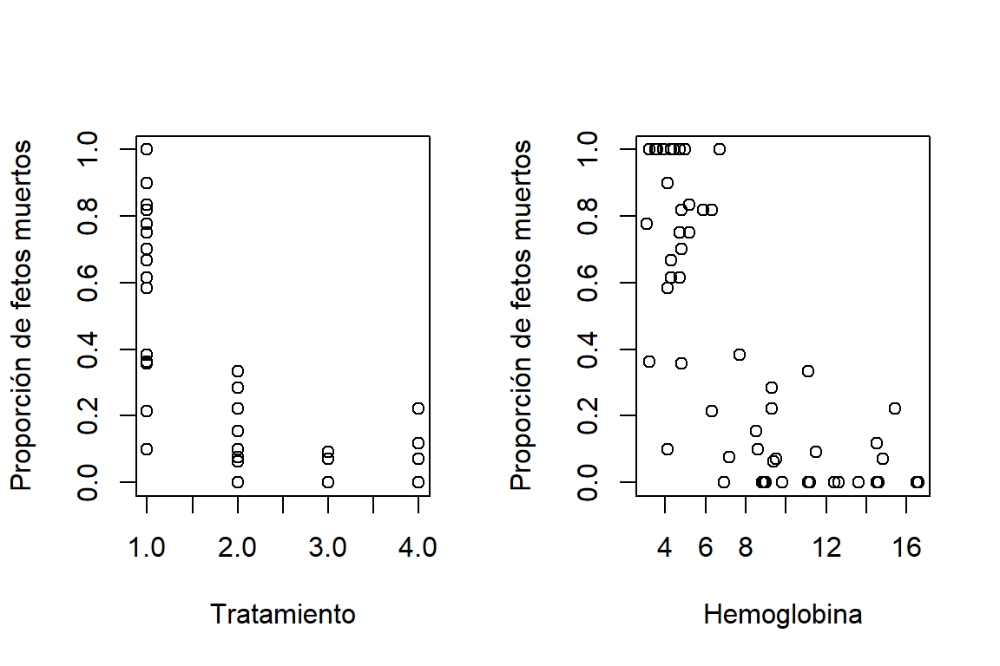
<p class="caption">
Figure 3.1: Datos de teratoligía. Relación entre la proporción de fetos muertos por camada con los tratamientos (izquierda) y los niveles de hemoglobina de la madra (derecha)
</p>
</div>
<p>Si consideramos:
<span class="math display">\[
y_{ij} = \begin{cases}
1 &amp; \mbox{ si el feto } j \mbox{ de la camada }i\mbox{ está muerto}, \\
0 &amp; \mbox{ si lo contrario}, \\
\end{cases}
\]</span>
la variable número de fetos muertos se puede asociar a una distribución binomial:
<span class="math display">\[
y_i = \sum_{j=1}^{n_i} y_{ij} \sim \mbox{binomial}(n_i, \pi_i),
\]</span>
donde <span class="math inline">\(n_i\)</span> es el tamaño de la camada y <span class="math inline">\(\pi_i\)</span> es la probabilidad de que el feto muera. Dado que <span class="math inline">\(\pi_i\)</span> depende del tratamiento y de los niveles de hemoglobina de la rata hembra, se propone que:
<span class="math display">\[
\log\begin{pmatrix} \frac{\pi_i}{1-\pi_i} \end{pmatrix}=\beta_0+\beta_1\text{grp1}_{i}+\beta_2\text{grp2}_{i}+\beta_3\text{grp3}_{i}+\beta_4\text{hb}_i,
\]</span>
donde: <span class="math inline">\(\text{grp1}_{i}=1\)</span> si la <span class="math inline">\(i\)</span>-ésima hembra pertenece al grupo 1, <span class="math inline">\(\text{grp1}_{i}=0\)</span> si lo contrario; <span class="math inline">\(\text{grp2}_{i}=1\)</span> si la <span class="math inline">\(i\)</span>-ésima hembra pertenece al grupo 2, <span class="math inline">\(\text{grp2}_{i}=0\)</span> si lo contrario; <span class="math inline">\(\text{grp3}_{i}=1\)</span> si la <span class="math inline">\(i\)</span>-ésima hembra pertenece al grupo 3, <span class="math inline">\(\text{grp3}_{i}=0\)</span> si lo contrario; y <code>hb_i</code> es el nivel de hemoglobina de la hembra <span class="math inline">\(i\)</span>.</p>
</div>
</div>
<div id="datos-agrupados-o-datos-no-agrupados" class="section level2 hasAnchor" number="3.2">
<h2><span class="header-section-number">3.2</span> Datos agrupados o datos no agrupados<a href="modelos-para-respuestas-binarias.html#datos-agrupados-o-datos-no-agrupados" class="anchor-section" aria-label="Anchor link to header"></a></h2>
<p>Sea <span class="math inline">\((y_1,\ldots,y_N)\)</span> el número de éxitos de <span class="math inline">\(\boldsymbol n= (n_1,\ldots,n_N)\)</span> ensayos independientes. Por lo que, <span class="math inline">\(y_i\sim\)</span>binomial<span class="math inline">\((n_i,\pi_i)\)</span>. Además, se tiene que <span class="math inline">\(n = \sum_{i=1}^{N}\)</span> es el número total de observaciones binarias.</p>
<p>Los datos en estos casos pueden tener dos formatos. Decimos que tenemos datos no agrupados si <span class="math inline">\(\boldsymbol n= (1,1,\ldots,1)\)</span>. Es decir, cada observación <span class="math inline">\(y_i\)</span> resulta de un único ensayo de Bernoulli y, por tanto, es igual a <span class="math inline">\(0\)</span> o <span class="math inline">\(1\)</span> (como los datos de bajo peso al nacer). En este caso, resultan aplicables los métodos de inferencia estadística para muestras grandes a medida que <span class="math inline">\(N \to \infty\)</span>.</p>
<p>En caso que <span class="math inline">\(n_i &gt; 1\)</span> tenemos datos agrupados, como en los datos de los escarabajos. Aquí un grupo de escarbajos <span class="math inline">\((n_i)\)</span> fueron sometidos a la misma dosis <span class="math inline">\((x_i)\)</span>. Esto ocurre con frecuencia cuando se tienen covariables de tipo categórico. En tal caso, <span class="math inline">\(n_i\)</span> representa el número de observaciones correspondientes a la <span class="math inline">\(i\)</span>-esima configuración de variables explicativas. Para datos agrupados, las propiedades asintóticas de las inferencias aplican a medida que cada <span class="math inline">\(n_i \to \infty\)</span> para <span class="math inline">\(i=1,\ldots,N\)</span>.</p>
<p>Las propiedades de las medidas de bondad de ajuste, como la devianza <span class="math inline">\((D)\)</span> y la <span class="math inline">\(X^2\)</span> de Pearson, difieren entre ambos formatos. Para datos agrupados, ambos indicadores siguen, de forma asintótica, una distribución <span class="math inline">\(\chi^2_{n-p}\)</span>. Por lo que podemos utilizarlos para evaluar si el ajuste es bueno o no. Mientras que para datos no agrupados, esto no aplica. Tampoco para datos agrupados con <span class="math inline">\(N\)</span> grande y algunos <span class="math inline">\(n_i\)</span> muy pequeños. Se puede aproximar <span class="math inline">\(D\)</span> y <span class="math inline">\(X^2\)</span> agrupando <span class="math inline">\((\boldsymbol x_i,\hat{\boldsymbol y})\)</span> por particiones del espacio de covariables o por particiones de <span class="math inline">\(\hat{\pi}\)</span>.</p>
</div>
<div id="variables-binarias-como-variables-latentes---funciones-de-enlace" class="section level2 hasAnchor" number="3.3">
<h2><span class="header-section-number">3.3</span> Variables binarias como variables latentes - Funciones de enlace<a href="modelos-para-respuestas-binarias.html#variables-binarias-como-variables-latentes---funciones-de-enlace" class="anchor-section" aria-label="Anchor link to header"></a></h2>
<p>Asuma el siguiente modelo para una variable respuesta <span class="math inline">\((y_i^*)\)</span> no observable:
<span class="math display">\[
y_i^* = \boldsymbol x_i&#39;\boldsymbol \beta+ \varepsilon_i^* = \eta_i + \varepsilon_i^*,
\]</span>
donde <span class="math inline">\(\boldsymbol x_i\)</span> es el vector de covariables asociadas al <span class="math inline">\(i\)</span>-esimo individuo y <span class="math inline">\(\varepsilon_i^*\)</span> es el componente del error con media cero y con una función de distribución acumulada (fda) <span class="math inline">\(F()\)</span>. Además, se asume independencia entre los errores.</p>
<p>Ahora, hay un umbral <span class="math inline">\(\tau\)</span> tal que <span class="math inline">\(y_i=0\)</span> si <span class="math inline">\(y_{i}^* \leq \tau\)</span> y <span class="math inline">\(y_i=1\)</span> si <span class="math inline">\(y_{i}^* &gt; \tau\)</span> (ver Figura <a href="modelos-para-respuestas-binarias.html#fig:figvarlatente">3.2</a>). Entonces, se tiene que:
<span class="math display">\[\begin{equation}
\begin{split}
P(y_i=1) =&amp; P(y^{*}_i &gt; \tau) = P\left(\eta_i + \varepsilon_i &gt; \tau\right) = 1- P\left(\varepsilon_i \leq \tau- \eta_i  \right) \\
=&amp; 1 -  F\left(\tau- \eta_i\right)
\end{split}
\nonumber
\end{equation}\]</span>
Dado que los datos no tienen ninguna información sobre <span class="math inline">\(\tau\)</span>, podemos asumir que <span class="math inline">\(\tau=0\)</span>. También, que <span class="math inline">\(F\)</span> tiene una forma estándar con varianza fija.</p>
<div class="figure" style="text-align: center"><span style="display:block;" id="fig:figvarlatente"></span>
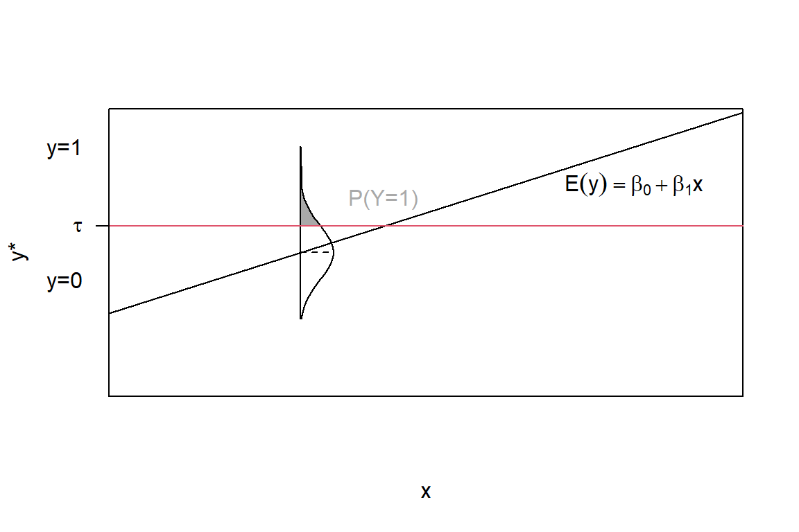
<p class="caption">
Figure 3.2: Modelo de variable latente con umbral, en el cual observamos que <span class="math inline">\(y_i = 1\)</span> cuando <span class="math inline">\(y^*_i &gt;  au\)</span>.
</p>
</div>
<p>Los modelos mas comunes asumen que <span class="math inline">\(F\)</span> es una distribución simétrica alrededor de cero (entonces, <span class="math inline">\(F(z)=1-F(-z)\)</span>), como la distribución normal estándar. Así que se tiene que:
<span class="math display">\[
P(y_i=1) = F(\eta_i) \mbox{ y } F^{-1}[P(y_i=1)] = \eta_i.
\]</span>
De aquí podeos determinar que en los modelos para datos binarios, la función de enlace se define naturalmente como la inversa de la función de distribución acumulada estándar de una familia de distribuciones continuas para una variable latente.</p>
<p>Si asumimos que <span class="math inline">\(F\)</span> es la fda de una normal estándar <span class="math inline">\(\Phi()\)</span>, entonces la función de enlace <span class="math inline">\(\Phi^{-1}()\)</span> es llamada función probit. En este modelo la probabilidad de <span class="math inline">\(y_i=1\)</span> es estimada de la siguiente forma:</p>
<p><span class="math display">\[
\pi_{i} = \Phi(\eta_i) = \frac{1}{\sqrt{2\pi}}\int^{\eta_i}_{-\infty} \exp(-t^2/2)dt.
\]</span>
El modelo logístico parte de asumir que <span class="math inline">\(F\)</span> es la fda de una distribución logística:
<span class="math display">\[
F(z) = \frac{e^z}{1+e^z},
\]</span>
y la función de enlace corresponde a la función logit <span class="math inline">\(F^{-1}(z) = \log \left( \frac{z}{1-z}\right)\)</span>.</p>
<p>Hay otras funciones de enlace que se utilizan que parten de fda de distribuciones conocidas. Por ejemplo, la función de enlace log-log complementaria:
<span class="math display">\[
\log[-\log(1-\pi_i)]=\eta_i.
\]</span>
Parte del complemento de la fda de la distribución Gumbel estándar:
<span class="math display">\[
F(z)=\exp[-\exp(z)].
\]</span>
En la Figura <a href="modelos-para-respuestas-binarias.html#fig:fdaEnlace">3.3</a> podemos ver la función de densidad y la fda de las tres distribuciones descritas anteriormente. La figura de la derecha muestra como se estaría modelando la probabilidad basada en estas distribuciones. Note que la fda de la logit y la probit tiene forma de ‘S’ simétrica, caso contrario de la que genera a partir de la distribución Gumbel, que tiene un comportamiento asimétrico.</p>
<div class="figure" style="text-align: center"><span style="display:block;" id="fig:fdaEnlace"></span>
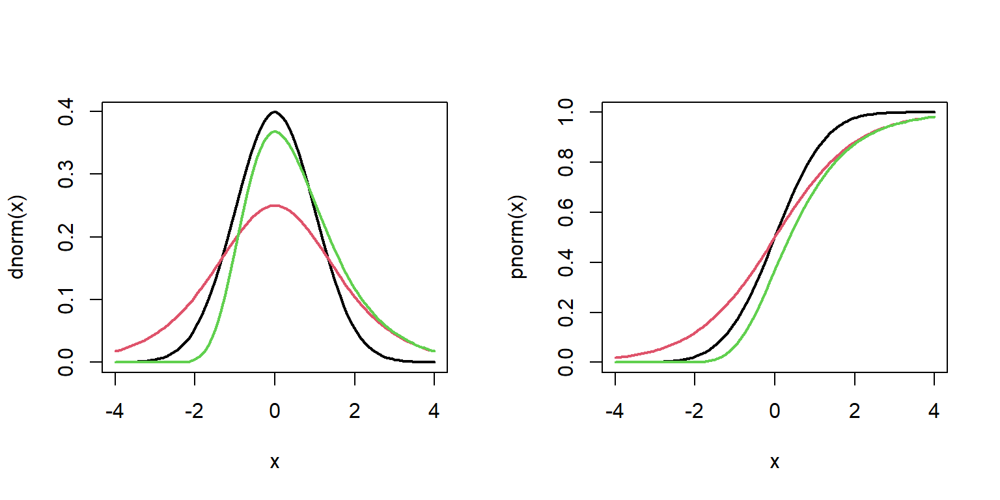
<p class="caption">
Figure 3.3: Función de densidad (izquierda) y fda de las distribuciones normal estándar (línea negra), logística estándar (línea roja) y Gumbel (línea verde).
</p>
</div>
<div id="modelo-logístico" class="section level3 hasAnchor" number="3.3.1">
<h3><span class="header-section-number">3.3.1</span> Modelo logístico<a href="modelos-para-respuestas-binarias.html#modelo-log%C3%ADstico" class="anchor-section" aria-label="Anchor link to header"></a></h3>
<p>El modelo logístico se expresa como:
<span class="math display">\[
\pi_i  = \frac{\exp(\boldsymbol x_i&#39;\boldsymbol \beta)}{1+\exp(\boldsymbol x_i&#39;\boldsymbol \beta)} \mbox{ o } \mbox{logit}(\pi_i) = \log \left( \frac{\pi_i}{(1-\pi_i)} \right) = \boldsymbol x_i&#39;\boldsymbol \beta.
\]</span>
Dado que la función de <span class="math inline">\(\pi_i\)</span> es monótona, podemos decir que si <span class="math inline">\(\beta_j &gt; 0\)</span> entonces el efecto de la <span class="math inline">\(j\)</span>-esima covariable es positivo (o es negativo si <span class="math inline">\(\beta_j &lt; 0\)</span>), manteniendo las demás covariables constantes. Si <span class="math inline">\(\beta_j=0\)</span>, entonces la <span class="math inline">\(j\)</span>-esima covariable no tiene efecto sobre la respuesta, cuando las demás covariables están dentro del modelo.</p>
<p>Para evaluar la magnitud del efecto de <span class="math inline">\(\beta_j\)</span> debemos evaluar la tasa de cambio con la que aumenta (o disminuye) <span class="math inline">\(\pi_i\)</span>. La cuál está dada por:
<span class="math display">\[
\frac{\delta \pi_i}{\delta x_{ij}} = \beta_j \frac{\exp(\boldsymbol x_i&#39;\boldsymbol \beta)}{[1+\exp(\boldsymbol x_i&#39;\boldsymbol \beta)]^2} = \beta_j \pi_i(1-\pi_i).
\]</span>
La pendiente es máxima (e igual a <span class="math inline">\(\beta_j/4\)</span>) en el valor de <span class="math inline">\(x_{ij}\)</span> para el cual <span class="math inline">\(\pi_i = 0.5\)</span>, y disminuye hacia <span class="math inline">\(0\)</span> a medida que <span class="math inline">\(\pi_i\)</span> se acerca a 0 o a 1. Como se mencionó en la sección anterior, la interpretación de los coeficientes se realiza a través del odd ratio.</p>
</div>
<div id="modelo-probit" class="section level3 hasAnchor" number="3.3.2">
<h3><span class="header-section-number">3.3.2</span> Modelo probit<a href="modelos-para-respuestas-binarias.html#modelo-probit" class="anchor-section" aria-label="Anchor link to header"></a></h3>
<p>En el modelo probit, <span class="math inline">\(\pi_i\)</span> está determinada como:
<span class="math display">\[
\pi_i = \Phi(\boldsymbol x_i&#39;\boldsymbol \beta) =  \mbox{ o }  \Phi^{-1}(\pi_i) = \boldsymbol x_i&#39;\boldsymbol \beta,
\]</span>
donde <span class="math inline">\(\Phi()\)</span> es la fda de la distribución normal estándar.</p>
<p>Para est e modelo, la tasa de cambio en <span class="math inline">\(\pi_i\)</span> asociada a la <span class="math inline">\(j\)</span>-esima covariable está dada por:
<span class="math display">\[
\frac{\delta \pi_i}{\delta x_{ij}} = \beta_j \phi(\boldsymbol x_i&#39;\boldsymbol \beta),
\]</span>
donde <span class="math inline">\(\phi()\)</span> es la función de densidad de la normal estándar. La pendientes máxima (igual a <span class="math inline">\(0.4\beta_j\)</span>) cuando <span class="math inline">\(\pi=0.5\)</span> (es decir, <span class="math inline">\(\boldsymbol x_i&#39;\boldsymbol \beta=0\)</span>). En función de la <span class="math inline">\(j\)</span>-esima covariable, la curva de respuesta probit para <span class="math inline">\(\pi\)</span> (o para <span class="math inline">\(1 − \pi_i\)</span>, cuando <span class="math inline">\(\beta-j&lt; 0\)</span>) tiene la apariencia de una función de fda de una normal con desviación estándar <span class="math inline">\(1/|\beta_j|\)</span>.</p>
<p>Las tasas de cambio en <span class="math inline">\(\pi_i=0.5\)</span> son iguales para las fda correspondientes a las curvas probit y logística cuando el parámetro <span class="math inline">\(\beta_j\)</span> de la curva logística es <span class="math inline">\(0.40/0.25 = 1.60\)</span> veces el parámetro <span class="math inline">\(\beta_j\)</span> de la curva probit, esta diferencia aumenta a medida que <span class="math inline">\(\pi_i\)</span> se aleja de <span class="math inline">\(0.5\)</span>. De aquí podemos decir que las estimaciones de los coeficients de regresión en la regresión logística son aproximadamente <span class="math inline">\(1.6\)</span> a <span class="math inline">\(1.8\)</span> veces mayores que las obtenidas en los modelos probit.</p>
</div>
<div id="modelo-log-log-complementario" class="section level3 hasAnchor" number="3.3.3">
<h3><span class="header-section-number">3.3.3</span> Modelo log-log complementario<a href="modelos-para-respuestas-binarias.html#modelo-log-log-complementario" class="anchor-section" aria-label="Anchor link to header"></a></h3>
<p>Las funciones de enlace logit y probit son simétricas alrededor de <span class="math inline">\(0.5\)</span>, en el sentido que logit<span class="math inline">\((\phi_i) =-\)</span>logit<span class="math inline">\((1-\phi_i)\)</span> y <span class="math inline">\(\Phi^{-1}(\pi) = - \Phi^{-1}(-\pi)\)</span>, respectivamente. En los casos en donde <span class="math inline">\(\pi_i\)</span> no presente este comportamiento simétrico, como puede ser que esta aumente lentamente para valores bajos o moderados, pero bruscamente con valores cerca de <span class="math inline">\(1\)</span>, estas funciones de enlace no son adecuadas.</p>
<p>Con la función de enlace log-log complementaria, la probabilidad es modelada de la siguiente forma:
<span class="math display">\[
\pi_i = 1 - \exp[-\exp(\boldsymbol x_i&#39;\boldsymbol \beta)].
\]</span>
En situaciones de comportamiento asimétrico de la probabilidad, esta función de enlace es preferible. Como lo muestra la Figura <a href="modelos-para-respuestas-binarias.html#fig:loglogCompl">3.4</a>, esta función se aproxima a cero relativamente despacio y se acerca a 1 rápidamente.</p>
<div class="figure" style="text-align: center"><span style="display:block;" id="fig:loglogCompl"></span>
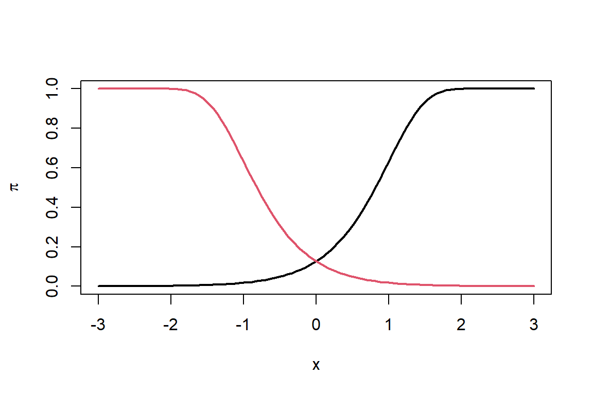
<p class="caption">
Figure 3.4: Probabilidades modeladas con función de enlace log-log complementarias con <span class="math inline">\(\beta &gt; 0\)</span> (línea negra) y <span class="math inline">\(eta &lt; 0\)</span> (línea roja) .
</p>
</div>
</div>
<div id="estimación-de-parámetros" class="section level3 hasAnchor" number="3.3.4">
<h3><span class="header-section-number">3.3.4</span> Estimación de parámetros<a href="modelos-para-respuestas-binarias.html#estimaci%C3%B3n-de-par%C3%A1metros" class="anchor-section" aria-label="Anchor link to header"></a></h3>
<p>La estimación de los parámetros se hacen a través de máxima verosimilitud a través del algoritmo de Newton-Raphson, Fisher scoring o mínimos cuadrados iterativamente reponderados. Del capítulo anterior, sabemos que la función score está dada por:
<span class="math display">\[
u(\beta_j)= \sum_{i=1}^{n}\frac{(y_i-\mu_i)x_{ij}}{V(y_i)}\frac{\partial \mu_i}{\partial \eta_i}, j=0,\ldots,p-1.
\]</span>
Mientras que la matriz de información es <span class="math inline">\(\boldsymbol I(\boldsymbol \beta) = \boldsymbol X&#39;\boldsymbol W\boldsymbol X\)</span>, donde <span class="math inline">\(\boldsymbol W\)</span> es una matriz diagonal con <span class="math inline">\(w_{ii} = \frac{(\delta\mu_j/\delta\eta_i)^2}{V(y_i)}\)</span>. Por lo que, la varianza asintótica de <span class="math inline">\(\widehat{\boldsymbol \beta}\)</span> es <span class="math inline">\(V(\widehat{\boldsymbol \beta}) = (\boldsymbol X&#39;\boldsymbol W\boldsymbol X)^{-1}\)</span>.</p>
<p>Asumiendo que <span class="math inline">\(n_i y_i \sim \mbox{binomial}(n_i,\pi_i)\)</span>, tenemos que <span class="math inline">\(\pi_i = F(\eta)\)</span>, <span class="math inline">\(V(y_i) = \pi_i (1-\pi_i)/n_i\)</span>, y <span class="math inline">\(\delta\mu_j/\delta\eta_i= f(\eta_i)\)</span>. Entonces, la función score toma la forma:
<span class="math display">\[
u(\beta_j)= \sum_{i=1}^{N}\frac{n_i(y_i-\pi_i)x_{ij}}{\pi_i (1-\pi_i)}f(\eta_i) = \sum_{i=1}^{N}\frac{n_i[y_i-F(\eta_i)]x_{ij}}{F(\eta_i) [1-F(\eta_i)]}f(\eta_i),
\]</span>
Por ejemplo, para el modelo logístico se tiene que <span class="math inline">\(F(z) = e^z/(1+e^z)\)</span> y <span class="math inline">\(f(z) = e^z/(1+e^z)^{2} = F(z)[1-F(z)]\)</span>. Por lo que la función score está dada por:
<span class="math display">\[
u(\beta_j)= \sum_{i=1}^{n}n_i(y_i-\pi_i)x_{ij} =0.
\]</span>
Además, <span class="math inline">\(w_{ii} = n_i\pi(1-\pi)\)</span>.</p>
<p>Para el modelo probit se tiene que</p>
<p><span class="math display">\[w_{jj} = n_i \frac{\Phi(\eta_i)^{2}}{\Phi(\eta_i)\left[1- \Phi(\eta_i)\right]}.\]</span></p>
</div>
<div id="devianza-1" class="section level3 hasAnchor" number="3.3.5">
<h3><span class="header-section-number">3.3.5</span> Devianza<a href="modelos-para-respuestas-binarias.html#devianza-1" class="anchor-section" aria-label="Anchor link to header"></a></h3>
<p>Para estos modelos, la devianza está dada por:
<span class="math display">\[
D=2\sum_{i=1}^n\left[y_i\log \left(\frac{y_i}{\widehat{\mu}_i}\right)+(n_i-y_i)\log\left(\frac{n_i-y_i}{n_i-\widehat{\mu}_i}\right)\right],
\]</span>
donde <span class="math inline">\(\widehat{\mu}_i=n_i\widehat{\pi}_i.\)</span></p>
<p>Para datos agrupados, la base de datos puede presentarse en formato agrupado o no agrupado. La desviación difiere en ambos casos. En el caso de los datos agrupados, el modelo saturado incluye un parámetro para cada combinación de valores de las variables explicativas. En el caso de los datos no agrupados, el modelo incluye un parámetro para cada sujeto.</p>
<p>Para datos agrupados, el estadístico de Pearson está determinado como:
<span class="math display">\[\begin{equation}
\begin{split}
X^2 &amp;= \sum_{i=1}^{N} \frac{(n_i y_i - n_i \hat{\pi}_i)^2}{n_i \hat{\pi}_i}
+ \sum_{i=1}^{N}\frac{\left[(n_i - n_i y_i) - (n_i - n_i \hat{\pi}_i)\right]^2}{n_i(1-\hat{\pi}_i)} \\
&amp;= \sum_{i=1}^{N}\frac{(n_i y_i - n_i \hat{\pi}_i)^2}{n_i \hat{\pi}_i(1-\hat{\pi}_i)}= \sum_{i=1}^{N}\frac{(y_i-\hat{\pi}_i)^2}{\hat{\pi}_i(1-\hat{\pi}_i)/n_i}
\end{split}
\nonumber
\end{equation}\]</span>
Como se mencionó anteriormente, para datos agrupados <span class="math inline">\(D\)</span> y <span class="math inline">\(X^2\)</span> pueden ser usados para realizar pruebas de bondad de ajuste. En caso de datos no agrupados, estos indicadores son útiles para la comparación de modelos. Tanto para datos agrupados como no agrupados, es posible comparar dos modelos anidados utilizando la diferencia de sus devianzas. Supongamos que el modelo <span class="math inline">\(M_0\)</span> tiene <span class="math inline">\(p_0\)</span> parámetros y que el modelo <span class="math inline">\(M_1\)</span> tiene <span class="math inline">\(p_1 &gt; p_0\)</span> parámetros. En este caso, la diferencia de las desviaciones constituye el estadístico de la prueba de razón de verosimilitud. Si el modelo <span class="math inline">\(M_0\)</span> es correcto, esta diferencia sigue, de forma aproximada, una distribución <span class="math inline">\(\chi^2\)</span> con <span class="math inline">\(p_1 − p_0\)</span> grados de libertad. Asimismo, los modelos pueden compararse empleando el estadístico de Pearson.</p>
</div>
<div id="comparación-de-funciones-de-enlace" class="section level3 hasAnchor" number="3.3.6">
<h3><span class="header-section-number">3.3.6</span> Comparación de funciones de enlace<a href="modelos-para-respuestas-binarias.html#comparaci%C3%B3n-de-funciones-de-enlace" class="anchor-section" aria-label="Anchor link to header"></a></h3>
<p>Para evaluar que función de enlace presenta mejor comportamiento podemos comparar la log-versomilitud (si los modelos tienen las mismas covariables), la devianza o criterios de información.</p>
<p>Para los datos de mortalidad de escarabajos, la Figura <a href="modelos-para-respuestas-binarias.html#fig:linkEsc">3.5</a> muestra la estimación de la probabilidad de que el escarabajo muera utilizando diferentes funciones de enlace (logit, probit, log-log complementaria). Aquí podemos ver que la función log-log complementaria parece mostrar mejores estimaciones que las otras.</p>
<div class="figure" style="text-align: center"><span style="display:block;" id="fig:linkEsc"></span>
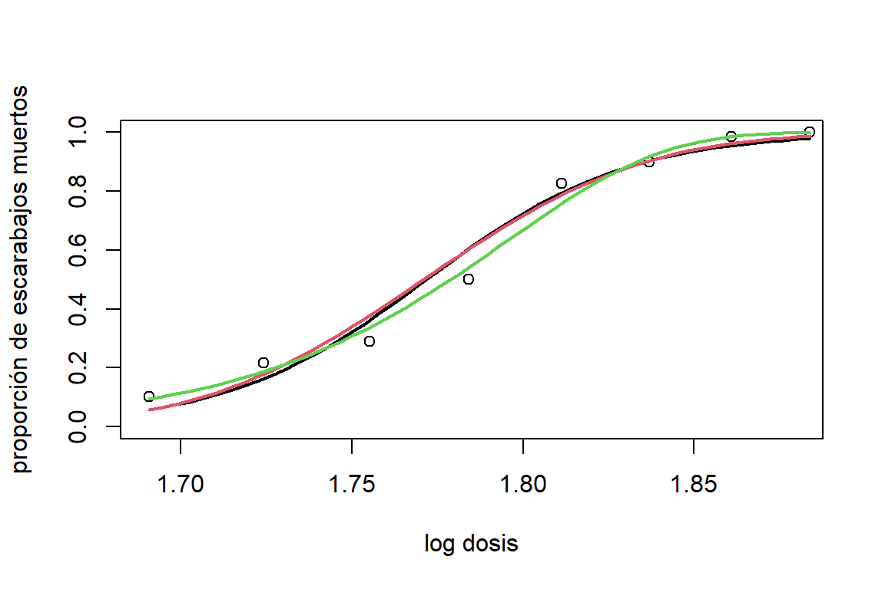
<p class="caption">
Figure 3.5: Datos de mortalidad de escarabajos. Estimaciones de la probabilidad de que el escarabajo muera en función del logaritmo de la dosis de disulfuro de carbono gaseoso utilizando diferentes funciones de enlace: logit(negro), probit(rojo) y cloglog(verde).
</p>
</div>
<p>Este resultado se puede comprobar comparando las log-verosimilitudes:</p>
<div class="sourceCode" id="cb68"><pre class="sourceCode r"><code class="sourceCode r"><span id="cb68-1"><a href="modelos-para-respuestas-binarias.html#cb68-1" tabindex="-1"></a><span class="fu">logLik</span>(modEsc.logit)</span></code></pre></div>
<pre><code>## &#39;log Lik.&#39; -18.71513 (df=2)</code></pre>
<div class="sourceCode" id="cb70"><pre class="sourceCode r"><code class="sourceCode r"><span id="cb70-1"><a href="modelos-para-respuestas-binarias.html#cb70-1" tabindex="-1"></a><span class="fu">logLik</span>(modEsc.probit)</span></code></pre></div>
<pre><code>## &#39;log Lik.&#39; -18.1589 (df=2)</code></pre>
<div class="sourceCode" id="cb72"><pre class="sourceCode r"><code class="sourceCode r"><span id="cb72-1"><a href="modelos-para-respuestas-binarias.html#cb72-1" tabindex="-1"></a><span class="fu">logLik</span>(modEsc.cloglog)</span></code></pre></div>
<pre><code>## &#39;log Lik.&#39; -14.82224 (df=2)</code></pre>
</div>
</div>
<div id="problema-de-separación" class="section level2 hasAnchor" number="3.4">
<h2><span class="header-section-number">3.4</span> Problema de separación<a href="modelos-para-respuestas-binarias.html#problema-de-separaci%C3%B3n" class="anchor-section" aria-label="Anchor link to header"></a></h2>
<p>Para GLM, la matriz Hessiana es negativa-definida, y la función de log-versomilitud es concava. Por lo que las estimaciones por máxima verosimilitud existen y son finitas, excepto en el caso en que un hiperplano separa el conjunto de valores de <span class="math inline">\(\boldsymbol x\)</span> para los cuales <span class="math inline">\(y = 0\)</span> del conjunto para los cuales <span class="math inline">\(y = 1\)</span>, como lo ilustra la Figura <a href="modelos-para-respuestas-binarias.html#fig:separacion">3.6</a>.</p>
<div class="figure" style="text-align: center"><span style="display:block;" id="fig:separacion"></span>
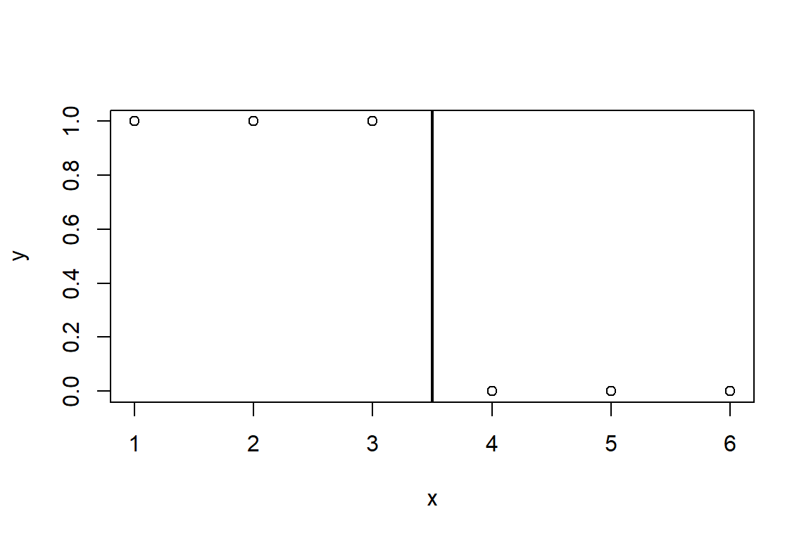
<p class="caption">
Figure 3.6: Caso de separación completa. <span class="math inline">\(y=1\)</span> cuando <span class="math inline">\(x &lt; 3.5\)</span> y <span class="math inline">\(y=0\)</span> cuando <span class="math inline">\(x &gt;3.5\)</span>.
</p>
</div>
<p>Al ajustar un modelo de la forma logit<span class="math inline">\((\pi_i) = \beta_0 + x_i\beta_1\)</span>, las funciones score son:
<span class="math display">\[
\sum_{i=1}^{n}\widehat{\pi}_i = \sum_{i=1}^{n} y_i \mbox{ y } \sum_{i=1}^{n}x_i\widehat{\pi}_i = \sum_{i=1}^{n} x_iy_i.
\]</span>
En el ejemplo, <span class="math inline">\(\sum_{i=1}^{6}\widehat{\pi}_i=3\)</span> y <span class="math inline">\(\sum_{i=1}^{6}i\widehat{\pi}_i=6\)</span>. La solución es <span class="math inline">\(\widehat{\pi}= 1\)</span>, para <span class="math inline">\(i=1,2,3\)</span> y <span class="math inline">\(\widehat{\pi}= 0\)</span> para <span class="math inline">\(i=4,5,6\)</span>. Al hacer que <span class="math inline">\(\widehat{\beta}_1\)</span> tienda a <span class="math inline">\(\infty\)</span> y estableciendo <span class="math inline">\(\widehat{\beta}_0 = -3.5\widehat{\beta}_1\)</span>, de modo que <span class="math inline">\(\widehat{\pi}=0.5\)</span> cuando <span class="math inline">\(x=3.5\)</span>, podemos generar una secuencia de estimaciones con valores de la verosimilitud siempre creciente, la cual se aproxima progresivamente a satisfacer estas ecuaciones y a lograr un ajuste perfecto. Los sofware generalmente fallan en detectar que la solución de <span class="math inline">\(\widehat{\beta}_1\)</span> es <span class="math inline">\(\infty\)</span>. Esto porque, luego de un número de iteraciones, la función de log-verosimilitud empieza a tener un aspecto plano, y en consecuencia, se cumplen los criterios de convergencia y el software reporta la estimación. Esto lo podemos ver en el siguiente ejemplo:</p>
<div class="sourceCode" id="cb74"><pre class="sourceCode r"><code class="sourceCode r"><span id="cb74-1"><a href="modelos-para-respuestas-binarias.html#cb74-1" tabindex="-1"></a>x <span class="ot">&lt;-</span> <span class="fu">c</span>(<span class="dv">1</span>,<span class="dv">2</span>,<span class="dv">3</span>,<span class="dv">4</span>,<span class="dv">5</span>,<span class="dv">6</span>); y <span class="ot">&lt;-</span> <span class="fu">c</span>(<span class="dv">1</span>,<span class="dv">1</span>,<span class="dv">1</span>,<span class="dv">0</span>,<span class="dv">0</span>,<span class="dv">0</span>)</span>
<span id="cb74-2"><a href="modelos-para-respuestas-binarias.html#cb74-2" tabindex="-1"></a>fit <span class="ot">&lt;-</span> <span class="fu">glm</span>(y <span class="sc">~</span> x, <span class="at">family =</span> <span class="fu">binomial</span>(<span class="at">link =</span> logit))</span>
<span id="cb74-3"><a href="modelos-para-respuestas-binarias.html#cb74-3" tabindex="-1"></a><span class="fu">summary</span>(fit)</span></code></pre></div>
<pre><code>## 
## Call:
## glm(formula = y ~ x, family = binomial(link = logit))
## 
## Coefficients:
##              Estimate Std. Error z value Pr(&gt;|z|)
## (Intercept)    165.32  407521.43       0        1
## x              -47.23  115264.41       0        1
## 
## (Dispersion parameter for binomial family taken to be 1)
## 
##     Null deviance: 8.3178e+00  on 5  degrees of freedom
## Residual deviance: 2.2152e-10  on 4  degrees of freedom
## AIC: 4
## 
## Number of Fisher Scoring iterations: 25</code></pre>
<p>Dado que la función de log-verosimilitud es tan plana y <span class="math inline">\(V(\widehat{\beta}_j)\)</span> se calcula a partir de su curvatura —el negativo de la inversa de la matriz hessiana—, el software suele reportar errores estándar extremadamente elevados (que en teoría debería ser <span class="math inline">\(\infty\)</span>).</p>
<p>Cuando existe ese hiperplano que sepera los valores de <span class="math inline">\(\boldsymbol x\)</span> correspondientes a <span class="math inline">\(y_=1\)</span> de los correspondientes a <span class="math inline">\(y_i=0\)</span>, pero existen algunos casos con ambos resultados <span class="math inline">\((y_i=0\)</span> o <span class="math inline">\(y_i=1)\)</span> sobre dicho hiperplano, se habla de cuasi-separación. Por ejemplo, si en los datos de la Figura <a href="modelos-para-respuestas-binarias.html#fig:separacion">3.6</a> añadimos dos observaciones en <span class="math inline">\(x=2.5\)</span>; una con <span class="math inline">\(y=1\)</span> y la otra con <span class="math inline">\(y=0\)</span>. Este problema es común cuando se tienen covariables de tipo cualitativos. Si alguna categoría de la covariable carece de casos con <span class="math inline">\(y = 0\)</span> (o <span class="math inline">\(y=1\)</span>), surge una separación cuasi-completa al incluir dicha covariable en el modelo. En presencia de separación cuasi-completa, no existe una discriminación perfecta para todas las observaciones. Sin embargo, se pueden encontrar errores estándar que resultan inusualmente grandes.</p>
<p>A pesar de este problema que se presentan cuando hay separación o cuasi-separación, es posible realizar pruebas de razón de verosimilitud. Esto porque la log-verosimilitud alcanza su valor máximo en la estimación infinita de un parámetro, lo que permite compararla con el valor obtenido cuando dicho parámetro se fija en un valor determinado, como cero. En el caso de una separación cuasi-completa, es posible que algunas estimaciones de los parámetros y sus errores estándar no se vean afectadas, permitiendo incluso el uso realizar pruebas de hipótesis por el método de Wald.</p>
</div>
<div id="curva-característica-operativa-del-receptorroc" class="section level2 hasAnchor" number="3.5">
<h2><span class="header-section-number">3.5</span> Curva característica operativa del receptor(ROC)<a href="modelos-para-respuestas-binarias.html#curva-caracter%C3%ADstica-operativa-del-receptorroc" class="anchor-section" aria-label="Anchor link to header"></a></h2>
<p>Los modelos para datos binarios pueden utilizarse para clasificación de individuos. Por ejemplo, se puede clasificar un nonato como recién nacido con bajo peso <span class="math inline">\((\widehat{y}_o = 1)\)</span> tomando en cuenta características de la madre (<span class="math inline">\(\boldsymbol x_0\)</span>). Esto de acuerdo con las probabilidades estimadas por medio del modelo <span class="math inline">\((\widehat{\pi}_i)\)</span>. Entonces, para evaluar el poder clasificatorio del modelo se puede construir una tabla de contingencia comparando los valores observados <span class="math inline">\((y_i)\)</span> con la clasificación a través del modelo <span class="math inline">\((\widehat{y}_i)\)</span>. La clacificación <span class="math inline">\(\widehat{y}_i\)</span> se define como:
<span class="math display">\[
\widehat{y}_i = \begin{cases}
1 &amp; \mbox{si } \widehat{\pi}_i &gt; \pi_0, \\
0 &amp; \mbox{si } \widehat{\pi}_i \leq \pi_0, \\
\end{cases}
\]</span>
para un punto de corte <span class="math inline">\(\pi_0\)</span> definido por el investigador, por ejemplo <span class="math inline">\(\pi_0 = 0.2\)</span>. Con esto podemos construir la siguiente tabla de clasificación:</p>
<table class="table table-striped" style="color: black; width: auto !important; margin-left: auto; margin-right: auto;">
<thead>
<tr>
<th style="empty-cells: hide;border-bottom:hidden;" colspan="1">
</th>
<th style="border-bottom:hidden;padding-bottom:0; padding-left:3px;padding-right:3px;text-align: center; " colspan="1">
<div style="border-bottom: 1px solid #ddd; padding-bottom: 5px; ">
<span class="math inline">\(\hat{y}=0\)</span>
</div>
</th>
<th style="border-bottom:hidden;padding-bottom:0; padding-left:3px;padding-right:3px;text-align: center; " colspan="1">
<div style="border-bottom: 1px solid #ddd; padding-bottom: 5px; ">
<span class="math inline">\(\hat{y}=1\)</span>
</div>
</th>
</tr>
</thead>
<tbody>
<tr>
<td style="text-align:left;">
<span class="math inline">\(y=0\)</span>
</td>
<td style="text-align:left;">
a
</td>
<td style="text-align:left;">
c
</td>
</tr>
<tr>
<td style="text-align:left;">
<span class="math inline">\(y=1\)</span>
</td>
<td style="text-align:left;">
b
</td>
<td style="text-align:left;">
d
</td>
</tr>
</tbody>
</table>
<p>donde <span class="math inline">\(a\)</span> y <span class="math inline">\(b\)</span> corresponde al conteo de predicciones negativas <span class="math inline">\((\widehat{y}= 0)\)</span> correctas (cuando <span class="math inline">\(y=0\)</span>) e incorrectas (cuando <span class="math inline">\(y=1\)</span>), respectivamente. Mientras que <span class="math inline">\(c\)</span> y <span class="math inline">\(d\)</span> son los contenos de predicciones positivas <span class="math inline">\((\widehat{y}= 1)\)</span> incorrectas (cuando <span class="math inline">\(y=0\)</span>) y correctas (cuando <span class="math inline">\(y=1\)</span>), respectivamente.</p>
<p>El recuento de casillas en esta tabla permite estimar la sensibilidad, definida como la probabilidad de identificar correctamente un caso positivo, esto es:
<span class="math display">\[
P(\widehat{y}=1|y=1) = \frac{d}{b+d},
\]</span>
y la especificidad, definida como la probabilidad de identificar correctamente un caso negativo,
<span class="math display">\[
P(\widehat{y}=0|y=0) = \frac{a}{a+c}.
\]</span>
Si el objetivo del modelo es realizar predicciones es preferible obtener valores altos para estas métricas. Sin embargo, estos valores dependen de <span class="math inline">\(\pi_0\)</span>.</p>
<p>Consideremos los datos de peso al nacer. Se propone el siguiente modelo para la probabilidad de nacer con bajo peso:
<span class="math display">\[
\mbox{logit } \pi_i = \beta_0+  \mbox{age}_i\beta_1+  \mbox{lwt}_i\beta_2 +  \mbox{smoke}_i\beta_3 + \mbox{ptl}_i\beta_4,
\]</span>
El ajuste del modelo es:</p>
<div class="sourceCode" id="cb76"><pre class="sourceCode r"><code class="sourceCode r"><span id="cb76-1"><a href="modelos-para-respuestas-binarias.html#cb76-1" tabindex="-1"></a>mod.lbw <span class="ot">=</span> <span class="fu">glm</span>(low <span class="sc">~</span> age <span class="sc">+</span> lwt <span class="sc">+</span> smoke <span class="sc">+</span> ptl, <span class="at">data=</span> birthwt,<span class="at">family=</span>binomial)</span>
<span id="cb76-2"><a href="modelos-para-respuestas-binarias.html#cb76-2" tabindex="-1"></a><span class="fu">summary</span>(mod.lbw)</span></code></pre></div>
<pre><code>## 
## Call:
## glm(formula = low ~ age + lwt + smoke + ptl, family = binomial, 
##     data = birthwt)
## 
## Coefficients:
##              Estimate Std. Error z value Pr(&gt;|z|)  
## (Intercept)  1.275961   1.031063   1.238   0.2159  
## age         -0.048859   0.033796  -1.446   0.1483  
## lwt         -0.010412   0.006219  -1.674   0.0941 .
## smoke        0.550111   0.334455   1.645   0.1000  
## ptl          0.695720   0.336895   2.065   0.0389 *
## ---
## Signif. codes:  0 &#39;***&#39; 0.001 &#39;**&#39; 0.01 &#39;*&#39; 0.05 &#39;.&#39; 0.1 &#39; &#39; 1
## 
## (Dispersion parameter for binomial family taken to be 1)
## 
##     Null deviance: 234.67  on 188  degrees of freedom
## Residual deviance: 218.36  on 184  degrees of freedom
## AIC: 228.36
## 
## Number of Fisher Scoring iterations: 4</code></pre>
<p>Estos resultados muestran que el estado de tabaquismo y el historial de partos prematuros son factores de riesgo para el bajo peso al nacer. Sin embargo, el primero no tiene un aporte significativo dentro del modelo. Ahora vamos a evaluar el poder predictivo del modelo. Si definimos <span class="math inline">\(\pi_0=0.5\)</span>, tenemos los siguientes resultados:</p>
<table class="table table-striped" style="color: black; width: auto !important; margin-left: auto; margin-right: auto;">
<thead>
<tr>
<th style="empty-cells: hide;border-bottom:hidden;" colspan="1">
</th>
<th style="border-bottom:hidden;padding-bottom:0; padding-left:3px;padding-right:3px;text-align: center; " colspan="1">
<div style="border-bottom: 1px solid #ddd; padding-bottom: 5px; ">
<span class="math inline">\(\hat{y}=0\)</span>
</div>
</th>
<th style="border-bottom:hidden;padding-bottom:0; padding-left:3px;padding-right:3px;text-align: center; " colspan="1">
<div style="border-bottom: 1px solid #ddd; padding-bottom: 5px; ">
<span class="math inline">\(\hat{y}=1\)</span>
</div>
</th>
</tr>
</thead>
<tbody>
<tr>
<td style="text-align:left;">
<span class="math inline">\(y=0\)</span>
</td>
<td style="text-align:right;">
123
</td>
<td style="text-align:right;">
7
</td>
</tr>
<tr>
<td style="text-align:left;">
<span class="math inline">\(y=1\)</span>
</td>
<td style="text-align:right;">
49
</td>
<td style="text-align:right;">
10
</td>
</tr>
</tbody>
</table>
<p>Por lo tanto, la sensibilidad es <span class="math inline">\(10/59 = 0,169\)</span> y la especificidad es <span class="math inline">\(123/130 = 0.946\)</span>. Con este punto de corte, el modelo tiene una predictividad alta para los recién nacidos con peso adecuado (alta especificidad). Sin embargo, la probabilidad de falsos positivos es alta (baja sensibilidad). Ahora, si definimos <span class="math inline">\(\pi_0= 0,3\)</span> obtenemos lo siguiente:</p>
<table class="table table-striped" style="color: black; width: auto !important; margin-left: auto; margin-right: auto;">
<thead>
<tr>
<th style="empty-cells: hide;border-bottom:hidden;" colspan="1">
</th>
<th style="border-bottom:hidden;padding-bottom:0; padding-left:3px;padding-right:3px;text-align: center; " colspan="1">
<div style="border-bottom: 1px solid #ddd; padding-bottom: 5px; ">
<span class="math inline">\(\hat{y}=0\)</span>
</div>
</th>
<th style="border-bottom:hidden;padding-bottom:0; padding-left:3px;padding-right:3px;text-align: center; " colspan="1">
<div style="border-bottom: 1px solid #ddd; padding-bottom: 5px; ">
<span class="math inline">\(\hat{y}=1\)</span>
</div>
</th>
</tr>
</thead>
<tbody>
<tr>
<td style="text-align:left;">
<span class="math inline">\(y=0\)</span>
</td>
<td style="text-align:right;">
79
</td>
<td style="text-align:right;">
51
</td>
</tr>
<tr>
<td style="text-align:left;">
<span class="math inline">\(y=1\)</span>
</td>
<td style="text-align:right;">
19
</td>
<td style="text-align:right;">
40
</td>
</tr>
</tbody>
</table>
<p>En este caso la sensibilidad aumentó <span class="math inline">\((40/59 = 0,678)\)</span>, pero la especificidad disminuye <span class="math inline">\((79/130 = 0,607)\)</span>. En la Figura <a href="modelos-para-respuestas-binarias.html#fig:sensespc">3.7</a> podemos observar que a medida que aumenta <span class="math inline">\(\pi_0\)</span> la sensibilidad disminuye y la especificidad aumenta.</p>
<div class="figure" style="text-align: center"><span style="display:block;" id="fig:sensespc"></span>
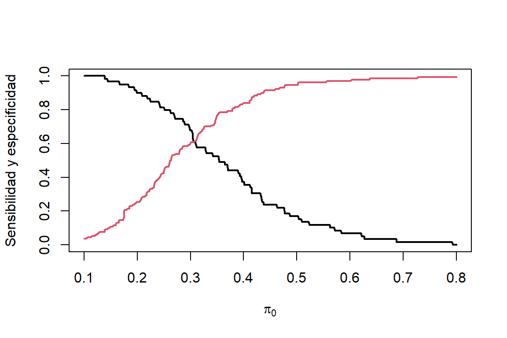
<p class="caption">
Figure 3.7: Datos de bajo peso al nacer. Sensibilidad (linea negra) y especificidad (linea roja) para diferentes puntos de corte.
</p>
</div>
<p>Dado que la sensibilidad y especificidad tiene una alta dependencia del punto de corte, lo preferible es calcular estas cantidades para muchos valores de <span class="math inline">\(\pi_0\)</span> y buscar un valor ‘óptimo’.</p>
<p>La sensibilidad es la tasa de verdaderos positivos (tvp), mientras que, el complemento de la especificidad <span class="math inline">\((P(\widehat{y}= 1 | y=0))\)</span> es la tasa de falsos positivos (tfp). El gráfico de la tasa de verdaderos positivos en función de la tasa de falsos positivos para diferentes valores de <span class="math inline">\(\pi_0\)</span>, entre <span class="math inline">\(0\)</span> y <span class="math inline">\(1\)</span>, lleva el nombre de curva característica operativa del receptor (ROC). Cuando <span class="math inline">\(\pi_0\)</span> es muy cercano a <span class="math inline">\(1\)</span>, casi todas las predicciones son <span class="math inline">\(\widehat{y}=0\)</span>; entonces tenemos (tvp,tfp)<span class="math inline">\(\approx(0,0)\)</span>. Mientras que, cuando <span class="math inline">\(\pi_0\)</span> es muy cercano a <span class="math inline">\(0\)</span>, casi todas las predicciones son <span class="math inline">\(\widehat{y}=1\)</span>; entonces tenemos (tvp,tfp)<span class="math inline">\(\approx(1,1)\)</span>. esto lo podemos ver en la Figura <a href="modelos-para-respuestas-binarias.html#fig:sensespc2">3.8</a>.</p>
<div class="figure" style="text-align: center"><span style="display:block;" id="fig:sensespc2"></span>
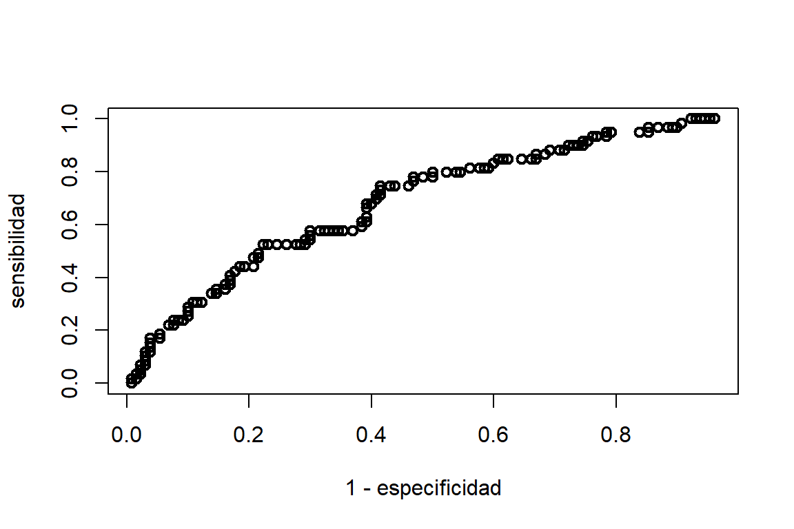
<p class="caption">
Figure 3.8: Datos de bajo peso al nacer. Sensibilidad (linea negra) y especificidad (linea roja) para diferentes puntos de corte.
</p>
</div>
<p>Si el modelo realiza buenas predicciones, para un valor de especificidad dado, se espera que la sensibilidad también sea alta. Por lo tanto, el poder predictivo del modelo se puede medir a través del área bajo la curva del gráfico ROC. Esta medida es llamada índice de concordancia.</p>
<p>En R, las curvas ROC se puede realizar por medio de la función <code>roc</code> de la librería <code>pROC</code> de la siguiente forma:</p>
<div class="sourceCode" id="cb78"><pre class="sourceCode r"><code class="sourceCode r"><span id="cb78-1"><a href="modelos-para-respuestas-binarias.html#cb78-1" tabindex="-1"></a><span class="fu">library</span>(pROC)</span>
<span id="cb78-2"><a href="modelos-para-respuestas-binarias.html#cb78-2" tabindex="-1"></a>modbw.logit <span class="ot">=</span> <span class="fu">glm</span>(low<span class="sc">~</span>age<span class="sc">+</span>lwt<span class="sc">+</span>ptl<span class="sc">+</span>smoke,<span class="at">family=</span><span class="fu">binomial</span>(logit),<span class="at">data=</span>birthwt)</span>
<span id="cb78-3"><a href="modelos-para-respuestas-binarias.html#cb78-3" tabindex="-1"></a>modbw.probit <span class="ot">=</span> <span class="fu">glm</span>(low<span class="sc">~</span>age<span class="sc">+</span>lwt<span class="sc">+</span>smoke<span class="sc">+</span>ptl,<span class="at">family=</span><span class="fu">binomial</span>(probit),<span class="at">data=</span>birthwt)</span>
<span id="cb78-4"><a href="modelos-para-respuestas-binarias.html#cb78-4" tabindex="-1"></a></span>
<span id="cb78-5"><a href="modelos-para-respuestas-binarias.html#cb78-5" tabindex="-1"></a>ROCbw.logit <span class="ot">=</span> <span class="fu">roc</span>(birthwt<span class="sc">$</span>low<span class="sc">~</span>modbw.logit<span class="sc">$</span>fitted.values)</span></code></pre></div>
<pre><code>## Setting levels: control = 0, case = 1</code></pre>
<pre><code>## Setting direction: controls &lt; cases</code></pre>
<div class="sourceCode" id="cb81"><pre class="sourceCode r"><code class="sourceCode r"><span id="cb81-1"><a href="modelos-para-respuestas-binarias.html#cb81-1" tabindex="-1"></a>ROCbw.probit <span class="ot">=</span> <span class="fu">roc</span>(birthwt<span class="sc">$</span>low<span class="sc">~</span>modbw.probit<span class="sc">$</span>fitted.values)</span></code></pre></div>
<pre><code>## Setting levels: control = 0, case = 1
## Setting direction: controls &lt; cases</code></pre>
<div class="sourceCode" id="cb83"><pre class="sourceCode r"><code class="sourceCode r"><span id="cb83-1"><a href="modelos-para-respuestas-binarias.html#cb83-1" tabindex="-1"></a><span class="fu">plot</span>(ROCbw.logit,<span class="at">xlab=</span><span class="st">&#39;especificidad&#39;</span>,<span class="at">ylab=</span><span class="st">&#39;sensibilidad&#39;</span>)</span>
<span id="cb83-2"><a href="modelos-para-respuestas-binarias.html#cb83-2" tabindex="-1"></a><span class="fu">lines</span>(ROCbw.probit,<span class="at">col=</span><span class="dv">2</span>)</span></code></pre></div>
<div class="figure"><span style="display:block;" id="fig:ROClbwdata"></span>
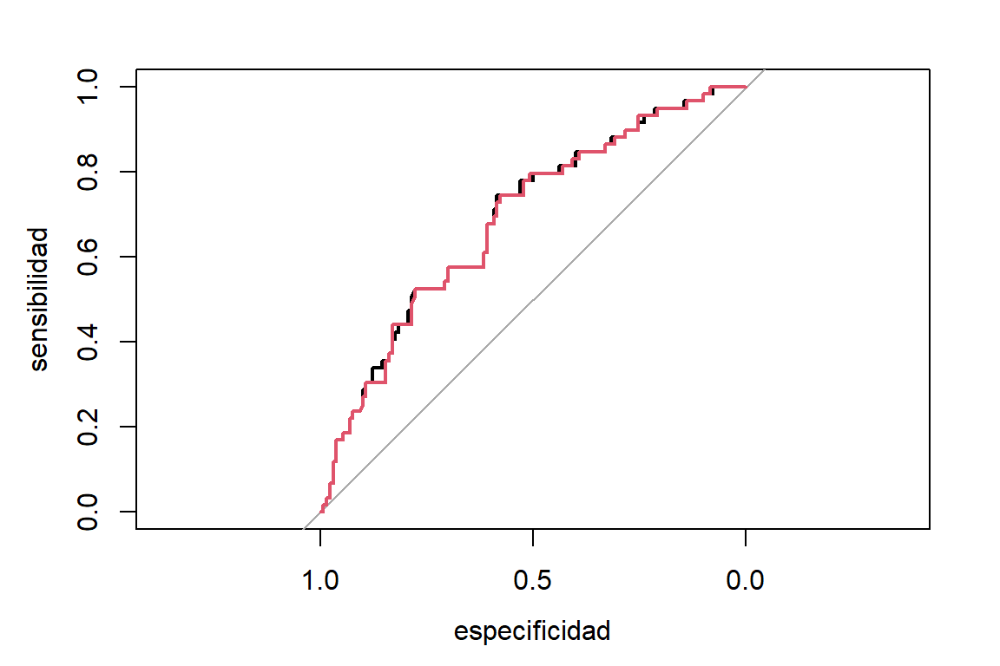
<p class="caption">
Figure 3.9: Datos de bajo peso al nacer. Curva ROC para predecir bajo peso al nacer usando el modelo logístico (negro) y el probit (rojo)
</p>
</div>
<p>En la Figura <a href="modelos-para-respuestas-binarias.html#fig:ROClbwdata">3.9</a> se puede observar que ambas funciones de enlace proporcionan el mismo poder predictivo. El índice de concordancia es de <span class="math inline">\(AUC= 0,6884\)</span> para el modelo logístico y <span class="math inline">\(AUC= 0,6866\)</span> para el modelo probit.</p>
<p>Para datos agrupados, la base de datos se debe desagrupar para obtener la curva ROC. Por ejemplo para los datos de escarabajos, la curva ROC se obtiene de la siguiente forma:</p>
<div class="sourceCode" id="cb84"><pre class="sourceCode r"><code class="sourceCode r"><span id="cb84-1"><a href="modelos-para-respuestas-binarias.html#cb84-1" tabindex="-1"></a>obs.morir <span class="ot">=</span> <span class="fu">unlist</span>(<span class="fu">apply</span>(Datos.esc,<span class="dv">1</span>,<span class="cf">function</span>(x){<span class="fu">rep</span>(<span class="fu">c</span>(<span class="dv">1</span>,<span class="dv">0</span>),<span class="fu">c</span>(x[<span class="dv">3</span>],x[<span class="dv">2</span>]<span class="sc">-</span>x[<span class="dv">3</span>]))}))</span>
<span id="cb84-2"><a href="modelos-para-respuestas-binarias.html#cb84-2" tabindex="-1"></a>prob.morir <span class="ot">=</span><span class="fu">rep</span>(modEsc.logit<span class="sc">$</span>fitted.values,Datos.esc<span class="sc">$</span>n)</span>
<span id="cb84-3"><a href="modelos-para-respuestas-binarias.html#cb84-3" tabindex="-1"></a>ROCesc <span class="ot">=</span> <span class="fu">roc</span>(obs.morir<span class="sc">~</span>prob.morir)</span></code></pre></div>
<pre><code>## Setting levels: control = 0, case = 1</code></pre>
<pre><code>## Setting direction: controls &lt; cases</code></pre>
<div class="sourceCode" id="cb87"><pre class="sourceCode r"><code class="sourceCode r"><span id="cb87-1"><a href="modelos-para-respuestas-binarias.html#cb87-1" tabindex="-1"></a><span class="fu">plot</span>(ROCesc,<span class="at">print.auc=</span>T)</span></code></pre></div>
<div class="figure"><span style="display:block;" id="fig:ROCescarabajos"></span>
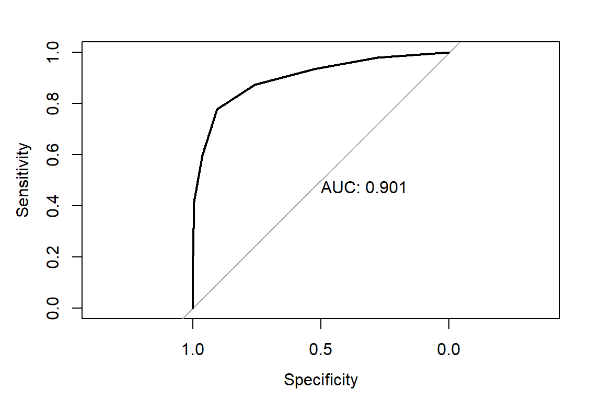
<p class="caption">
Figure 3.10: Datos de mortalidad de escarabajos. Curva ROC para el modelo logístico
</p>
</div>
<div id="obtención-de-un-valor-óptimo" class="section level3 hasAnchor" number="3.5.1">
<h3><span class="header-section-number">3.5.1</span> Obtención de un valor óptimo<a href="modelos-para-respuestas-binarias.html#obtenci%C3%B3n-de-un-valor-%C3%B3ptimo" class="anchor-section" aria-label="Anchor link to header"></a></h3>
<p>Hay varios criterios para determinar un valor <span class="math inline">\(\pi_0\)</span>, sin embargo este valor está a discreción del usuario, dependiendo del objetivo del modelo. En algunos casos es preferible una mayor sensibilidad que especificación, en otros lo contrario. Algunos de estos son, el criterio de Youden definido como:
<span class="math display">\[
\max_{\pi} (\mbox{sensibilidad}(\pi) + r \mbox{especificidad}(\pi)),
\]</span>
donde <span class="math inline">\(r= \frac{1-\mbox{prevanlencia}}{\mbox{costo}\times \mbox{prevanlencia}}\)</span>, la prevalencia (proporción de <span class="math inline">\(y=1\)</span> en la población) y el costo relativo de una clasificación falsa negativos (con respecto a los falsos positivos). Si asumimos que la prevalencia es igual a <span class="math inline">\(0.5\)</span> y el costo igual a <span class="math inline">\(1\)</span> (consideramos que ambos malas clasificaciones son igualmente graves), tenemos <span class="math inline">\(r=1\)</span>.</p>
<p>Otra alternativa es encontrar el punto más cercano a la esquina superior izquierda:
<span class="math display">\[
\min_{\pi} [(1-\mbox{sensibilidad}(\pi))^2 + r(1-\mbox{especificidad}(\pi))^2].
\]</span></p>
<p>Para el caso de bajo peso al nacer, si asumimos una prevalencia de recién nacidos con bajo peso de <span class="math inline">\(0.5\)</span> y asumimos un costo igual a 1 (consideramos igual de graves los falsos postivos que los falsos negativos) tenemos que:</p>
<div class="sourceCode" id="cb88"><pre class="sourceCode r"><code class="sourceCode r"><span id="cb88-1"><a href="modelos-para-respuestas-binarias.html#cb88-1" tabindex="-1"></a><span class="fu">coords</span>(ROCbw.logit,<span class="st">&quot;best&quot;</span>,<span class="at">best.weights=</span><span class="fu">c</span>(<span class="dv">1</span>, <span class="fl">0.5</span>))</span></code></pre></div>
<pre><code>##   threshold specificity sensitivity
## 1 0.2850599   0.5846154   0.7457627</code></pre>
<p>El punto óptimo está dado por <span class="math inline">\(\pi_0=0.503\)</span>, obteniendo una especificidad de <span class="math inline">\(0.961\)</span> y una sensibilidad de <span class="math inline">\(0.169\)</span>. Ahora si consideramos que los falsos negativos son más graves que los falsos positivos, podemos considerar un costo de <span class="math inline">\(2\)</span>:</p>
<div class="sourceCode" id="cb90"><pre class="sourceCode r"><code class="sourceCode r"><span id="cb90-1"><a href="modelos-para-respuestas-binarias.html#cb90-1" tabindex="-1"></a><span class="fu">coords</span>(ROCbw.logit,<span class="st">&quot;best&quot;</span>,<span class="at">best.weights=</span><span class="fu">c</span>(<span class="dv">2</span>, <span class="fl">0.5</span>))</span></code></pre></div>
<pre><code>##   threshold specificity sensitivity
## 1 0.1822159   0.2153846   0.9491525</code></pre>
<p>En este caso tenemos un punto de corte más bajo, favorenciendo una mayor sensibilidad (reduciendo la probabilidad de falsos negativos)</p>
</div>
</div>
<div id="sobredispersión" class="section level2 hasAnchor" number="3.6">
<h2><span class="header-section-number">3.6</span> Sobredispersión<a href="modelos-para-respuestas-binarias.html#sobredispersi%C3%B3n" class="anchor-section" aria-label="Anchor link to header"></a></h2>
<p>En un experimento Bernoulli se asume que los <span class="math inline">\(n_i\)</span> ensayos para la observación <span class="math inline">\(i,\quad (y_{i1},...y_{in_i})\)</span>, son independientes. Por lo tanto, para <span class="math inline">\(y_i = \sum_{j=1}^{n_i}y_{ij}/n_i\)</span>,tenemos que:</p>
<p><span class="math display">\[
E(y_i)=\pi_i \quad \text{y} \quad V(y_i)=\pi_i(1-\pi_i)\frac{1}{n_i}.
\]</span></p>
<p>Pero, hay casos donde las observaciones <span class="math inline">\((y_{i1},...y_{in_i})\)</span> están positivamente correlacionadas, lo que hace que <span class="math inline">\(V(y_{i}) \neq V(y_i)=\pi_i(1-\pi_i)\frac{1}{n_i}\)</span>. Si asumimos que <span class="math inline">\(cor(y_{is},y_{it})=\phi\)</span>, para todo <span class="math inline">\(s\ne t\)</span>, tenemos que:</p>
<p><span class="math display">\[
V(y_{it})=\pi_i(1-\pi_i)\quad \text{y} \quad cov(y_{it},y_{is})=\phi\pi_i(1-\pi_i).
\]</span></p>
<p>En este caso, la varianza de <span class="math inline">\(y_i\)</span> es:</p>
<p><span class="math display">\[
V(y_i)=V\begin{pmatrix} \sum_{j=1}^{n_i}\frac{y_{ij}}{n_i}\end{pmatrix}=\frac{1}{n_i^2} \left[ \sum_{j=1}^{n_i}V(y_{it})+2\sum\sum_{s&lt;t}cov(y_{is},y_{it}) \right]=[1+\phi(n_i-1)]\frac{\pi_i(1-\pi_i)}{n_i}.
\]</span>
Dependiendo del valor de <span class="math inline">\(\phi\)</span>, la varianza de <span class="math inline">\(y_i\)</span> puede ser mayor o menor a la esperada bajo una distribución binomial. Si <span class="math inline">\(\phi_i &gt; 0\)</span>, tenemos un problema de sobredispersión (los datos tienen una varianza superior a la que se asume bajo un modelo binomial). Mientras que, si <span class="math inline">\(-(n_i-1)^{-1}&lt;\phi&lt;0\)</span>, hay presencia de subdispersión. El segunda caso es menos frecuenta en datos reales.</p>
<div id="evaluación-de-sobredispersión" class="section level3 hasAnchor" number="3.6.1">
<h3><span class="header-section-number">3.6.1</span> Evaluación de sobredispersión<a href="modelos-para-respuestas-binarias.html#evaluaci%C3%B3n-de-sobredispersi%C3%B3n" class="anchor-section" aria-label="Anchor link to header"></a></h3>
<p>En el caso del modelo binomial, el estadístico de <span class="math inline">\(\chi^2\)</span> de Pearson está definido como:
<span class="math display">\[
X^2=\sum_{i=1}^n\frac{(y_i-\widehat{\pi}_i)^2}{\widehat{\pi}_i(1-\widehat{\pi}_1)/n_i}.
\]</span>
Si el modelo binomial proporciona buen ajuste, <span class="math inline">\(X^2\)</span> sigue (asintóticamente) una distribución <span class="math inline">\(\chi^2\)</span> con <span class="math inline">\(n-p\)</span> grados de libertad. Por lo tanto, un indicador de posible inflación de varianza es:
<span class="math display">\[
\widehat{\phi}=\frac{X^2}{n-p}.
\]</span>
Si hay problemas de sobredispersión, entonces <span class="math inline">\(\widehat{\phi} &gt; 1\)</span>.</p>
</div>
</div>
<div id="distribución-beta-binomial" class="section level2 hasAnchor" number="3.7">
<h2><span class="header-section-number">3.7</span> Distribución beta-binomial<a href="modelos-para-respuestas-binarias.html#distribuci%C3%B3n-beta-binomial" class="anchor-section" aria-label="Anchor link to header"></a></h2>
<p>El modelo beta-binomial es una alternativa para modelar datos binomial con sobredispersión. Esta distribución parte de una mezcla de una distribución binomial con una distribución beta. Sea <span class="math inline">\(y^{*}\)</span> el número de éxitos de <span class="math inline">\(n\)</span> ensayos Bernoulli. Se puede suponer la siguiente distribución de <span class="math inline">\(y^{*}\)</span>:
<span class="math display">\[
y^{*}|\pi\sim \mbox{binomial}(n,\pi), \mbox{ donde } \pi\sim \mbox{beta}(\alpha_1,\alpha_2).
\]</span>
La función de densidad de <span class="math inline">\(\pi\)</span> es:
<span class="math display">\[
f(\pi;\alpha_1,\alpha_2)=\frac{\Gamma(\alpha_1+\alpha_2)}{\Gamma(\alpha_1)\Gamma(\alpha_2)}\pi^{\alpha_1-1}(1-\pi)^{\alpha_2-1},
\]</span>
con <span class="math inline">\(\alpha_1&gt;0\)</span> y <span class="math inline">\(\alpha_2&gt;0\)</span>. Asumiendo <span class="math inline">\(\mu=\frac{\alpha_1}{\alpha_1+\alpha_2}\)</span> y <span class="math inline">\(\theta=1/(\alpha_1+\alpha_2)\)</span>, tenemos:</p>
<p><span class="math display">\[
E(\pi)=\mu\quad\text{y}\quad V(\pi)=\mu(1-\mu)\frac{\theta}{1+\theta}.
\]</span></p>
<p>La distribución beta-binomial se obtiene al marginalizar <span class="math inline">\(y^{*}\)</span>. Esto es:</p>
<p><span class="math display">\[
f(y^{*};n,\mu,\theta)=\int f(y^{*}|\pi)f(\pi)d\pi.
\]</span>
Al resolver la integral anterior, encontramos la función de densidad de la distribución beta-binomial es:</p>
<p><span class="math display">\[
f(y^{*};n,\mu,\theta)=\begin{pmatrix} n \\ y^{*} \end{pmatrix}\frac{\begin{bmatrix} \Pi_{k=0}^{y^{*}-1}(\mu+k\theta)\end{bmatrix} \begin{bmatrix} \Pi_{k=0}^{n-y^{*}-1}(1-\mu+k\theta)\end{bmatrix}}{\begin{bmatrix} \Pi_{k=0}^{n-1}(1+k\theta) \end{bmatrix}},
\]</span></p>
<p>para <span class="math inline">\(y^{*}=0,1,...,n.\)</span> El valor esperado y varianza de <span class="math inline">\(y = \frac{y^{*}}{n}\)</span> son:</p>
<p><span class="math display">\[
E(y)=\mu\quad\text{y}\quad V(y)=\left[ 1+(n-1)\frac{\theta}{1+\theta} \right]\frac{\mu(1-\mu)}{n} = \left[ 1+(n-1)\phi \right]\frac{\mu(1-\mu)}{n}.
\]</span></p>
<p>Por lo cual, <span class="math inline">\(\phi &gt; 0\)</span> es la correlación entre ensayos Bernoulli. La distribución de probabilidad de la distribución beta-binomial se puede observar en la Figura <a href="modelos-para-respuestas-binarias.html#fig:betabinomialdensidad">3.11</a>. Aquí vemos que la dispersión de la distribución beta-binomial aumenta con el parámetro <span class="math inline">\(\phi\)</span>.</p>
<div class="figure" style="text-align: center"><span style="display:block;" id="fig:betabinomialdensidad"></span>
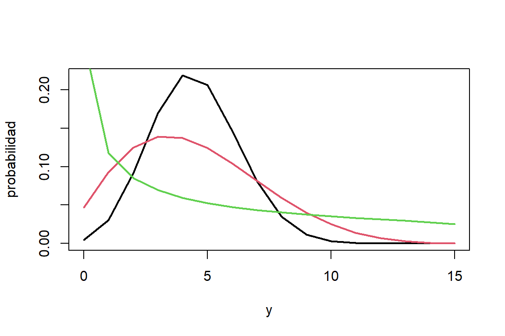
<p class="caption">
Figure 3.11: Distribución de probabilidad de Binomial(15,0.3) (negro), beta-binomial(15,0.3,0.1) (rojo), beta-binomial(15,0.3,0.4) (verde)
</p>
</div>
<div id="modelo-beta-binomial" class="section level3 hasAnchor" number="3.7.1">
<h3><span class="header-section-number">3.7.1</span> Modelo beta-binomial<a href="modelos-para-respuestas-binarias.html#modelo-beta-binomial" class="anchor-section" aria-label="Anchor link to header"></a></h3>
<p>El modelo beta-binomial para <span class="math inline">\(y_i^{*}\)</span> se define como:
<span class="math display">\[
y_i^{*}|\pi_i\sim \mbox{binomial}(n_i,\pi_i), \mbox{ donde } \pi_i\sim \mbox{beta}(\mu_i,\phi),
\]</span>
donde <span class="math inline">\(\mbox{logit } \mu_i = \boldsymbol x_{i}&#39;\boldsymbol \beta\)</span> (si usamos una función de enlace logit). Por lo cuál, para <span class="math inline">\(y_i = \frac{y_i^{*}}{n_i}\)</span> se tiene que:
<span class="math display">\[
E(y_i)=\mu_i\quad\text{y}\quad V(y_i)=[1+(n-1)\phi]\mu_i(1-\mu_i)/n_i,
\]</span>
La estimación de los parámetros <span class="math inline">\((\beta,\phi)\)</span> se hace por máxima verosimilitud. Dado que <span class="math inline">\(\phi&gt;0)\)</span>, el modelo beta-binomial no puede modelar datos con subdispersión.</p>
</div>
<div id="estudio-de-teratología-1" class="section level3 hasAnchor" number="3.7.2">
<h3><span class="header-section-number">3.7.2</span> Estudio de teratología<a href="modelos-para-respuestas-binarias.html#estudio-de-teratolog%C3%ADa-1" class="anchor-section" aria-label="Anchor link to header"></a></h3>
<p>Para los datos del estudio de teratología se puede proponer un modelo binomial en un principio:
<span class="math display">\[
y_i^* = n_i y_i \sim \mbox{binomial} (n_i, \pi_i),
\]</span>
donde <span class="math inline">\(n_i\)</span> y <span class="math inline">\(y_i\)</span> es el tamaño y la proporción de fetos muertos de la camada <span class="math inline">\(i\)</span>. Además, se tiene que:
<span class="math display">\[
\mbox{logit }\pi_i = \beta_0 + \mbox{hb}_i \beta_1 + \mbox{treat}_{2i} \beta_2 + \mbox{treat}_{3i}\beta_3 + \mbox{treat}_{4i} \beta_4.
\]</span>
El ajuste del modelo es:</p>
<div class="sourceCode" id="cb92"><pre class="sourceCode r"><code class="sourceCode r"><span id="cb92-1"><a href="modelos-para-respuestas-binarias.html#cb92-1" tabindex="-1"></a><span class="fu">data</span>(lirat,<span class="at">package =</span> <span class="st">&#39;VGAM&#39;</span>)</span>
<span id="cb92-2"><a href="modelos-para-respuestas-binarias.html#cb92-2" tabindex="-1"></a>modlirat.binom <span class="ot">=</span> <span class="fu">glm</span>(<span class="fu">cbind</span>(R,N<span class="sc">-</span>R)<span class="sc">~</span>hb<span class="sc">+</span><span class="fu">as.factor</span>(grp),<span class="at">family=</span>binomial,<span class="at">data=</span>lirat)</span>
<span id="cb92-3"><a href="modelos-para-respuestas-binarias.html#cb92-3" tabindex="-1"></a><span class="fu">summary</span>(modlirat.binom)</span></code></pre></div>
<pre><code>## 
## Call:
## glm(formula = cbind(R, N - R) ~ hb + as.factor(grp), family = binomial, 
##     data = lirat)
## 
## Coefficients:
##                 Estimate Std. Error z value Pr(&gt;|z|)    
## (Intercept)       2.1795     0.5056   4.311 1.63e-05 ***
## hb               -0.2190     0.1020  -2.148 0.031728 *  
## as.factor(grp)2  -2.4748     0.5045  -4.906 9.30e-07 ***
## as.factor(grp)3  -3.1527     0.9433  -3.342 0.000832 ***
## as.factor(grp)4  -2.0520     1.0629  -1.931 0.053525 .  
## ---
## Signif. codes:  0 &#39;***&#39; 0.001 &#39;**&#39; 0.01 &#39;*&#39; 0.05 &#39;.&#39; 0.1 &#39; &#39; 1
## 
## (Dispersion parameter for binomial family taken to be 1)
## 
##     Null deviance: 509.43  on 57  degrees of freedom
## Residual deviance: 168.91  on 53  degrees of freedom
## AIC: 250.38
## 
## Number of Fisher Scoring iterations: 5</code></pre>
<p>La evaluación de sobredispersión la podemos hacer usando la razón entre el estadístico <span class="math inline">\(\chi^2\)</span> de Pearson y los grados de libertad:</p>
<div class="sourceCode" id="cb94"><pre class="sourceCode r"><code class="sourceCode r"><span id="cb94-1"><a href="modelos-para-respuestas-binarias.html#cb94-1" tabindex="-1"></a>X2 <span class="ot">=</span> <span class="fu">sum</span>(<span class="fu">residuals</span>(modlirat.binom,<span class="at">type=</span><span class="st">&#39;pearson&#39;</span>)<span class="sc">^</span><span class="dv">2</span>)</span>
<span id="cb94-2"><a href="modelos-para-respuestas-binarias.html#cb94-2" tabindex="-1"></a>X2<span class="sc">/</span><span class="dv">53</span></span></code></pre></div>
<pre><code>## [1] 2.93993</code></pre>
<p>Dado que esta razón es aproximadamente <span class="math inline">\(3\)</span>, los datos presentan sobredispersión. Por lo tanto es mas conveniente proponer un modelo beta-binomial:
<span class="math display">\[
y_i^{*}\sim \mbox{beta-binomial}(n_i,\pi_i,\phi),
\]</span>
con
<span class="math display">\[
\mbox{logit }\pi_i = \beta_0 + \mbox{hb}_i \beta_1 + \mbox{treat}_{2i} \beta_2 + \mbox{treat}_{3i}\beta_3 + \mbox{treat}_{4i} \beta_4.
\]</span>
En R el modelo beta-binomial se puede estimar utilizando la función <code>betabin</code> de la librería <code>aod</code>:</p>
<div class="sourceCode" id="cb96"><pre class="sourceCode r"><code class="sourceCode r"><span id="cb96-1"><a href="modelos-para-respuestas-binarias.html#cb96-1" tabindex="-1"></a><span class="fu">library</span>(aod)</span>
<span id="cb96-2"><a href="modelos-para-respuestas-binarias.html#cb96-2" tabindex="-1"></a>modlirat.betabinom <span class="ot">=</span><span class="fu">betabin</span>(<span class="fu">cbind</span>(R,N<span class="sc">-</span>R)<span class="sc">~</span>hb<span class="sc">+</span><span class="fu">as.factor</span>(grp),<span class="at">data=</span>lirat,<span class="at">random=</span><span class="sc">~</span><span class="dv">1</span>)</span>
<span id="cb96-3"><a href="modelos-para-respuestas-binarias.html#cb96-3" tabindex="-1"></a>modlirat.betabinom</span></code></pre></div>
<pre><code>## Beta-binomial model
## -------------------
## betabin(formula = cbind(R, N - R) ~ hb + as.factor(grp), random = ~1, 
##     data = lirat)
## 
## Convergence was obtained after 433 iterations.
## 
## Fixed-effect coefficients:
##                   Estimate Std. Error    z value Pr(&gt; |z|)
## (Intercept)      2.130e+00  8.676e-01  2.455e+00 1.408e-02
## hb              -1.694e-01  1.772e-01 -9.557e-01 3.392e-01
## as.factor(grp)2 -2.441e+00  8.508e-01 -2.869e+00 4.113e-03
## as.factor(grp)3 -2.836e+00  1.329e+00 -2.134e+00 3.287e-02
## as.factor(grp)4 -2.285e+00  1.817e+00 -1.258e+00 2.085e-01
## 
## Overdispersion coefficients:
##                  Estimate Std. Error z value   Pr(&gt; z)
## phi.(Intercept) 2.356e-01  6.041e-02 3.9e+00 4.813e-05
## 
## Log-likelihood statistics
##    Log-lik      nbpar    df res.   Deviance        AIC       AICc 
## -9.302e+01          6         52  1.146e+02   1.98e+02  1.997e+02</code></pre>
<p>Las estimaciones de los coeficientes del modelo beta-binomial son similares a los del modelo binomial. Sin embargo, los errores estándar son mas grandes. Esto último es debido al efecto de la sobredispersión (<span class="math inline">\(\widehat{\phi}=0.236\)</span> indica una correlación positiva entre los fetos que pertenecen a la misma camada). Además, el efecto del tratamiento #4 no es significativamente diferente al placebo.</p>
<p>Podemos evaluar sobredispersión de nuevo:</p>
<div class="sourceCode" id="cb98"><pre class="sourceCode r"><code class="sourceCode r"><span id="cb98-1"><a href="modelos-para-respuestas-binarias.html#cb98-1" tabindex="-1"></a>X2 <span class="ot">=</span> <span class="fu">sum</span>(<span class="fu">residuals</span>(modlirat.betabinom,<span class="at">type=</span><span class="st">&#39;pearson&#39;</span>)<span class="sc">^</span><span class="dv">2</span>)</span>
<span id="cb98-2"><a href="modelos-para-respuestas-binarias.html#cb98-2" tabindex="-1"></a>X2<span class="sc">/</span><span class="dv">52</span></span></code></pre></div>
<pre><code>## [1] 0.9287516</code></pre>
<p>La razón está cercana a <span class="math inline">\(1\)</span> por lo que la varianza está mejor modelada por la distribución beta-binomial. La comparación de los ajustes se puede hacer a través de criterios de información:</p>
<div class="sourceCode" id="cb100"><pre class="sourceCode r"><code class="sourceCode r"><span id="cb100-1"><a href="modelos-para-respuestas-binarias.html#cb100-1" tabindex="-1"></a><span class="fu">AIC</span>(modlirat.binom)</span></code></pre></div>
<pre><code>## [1] 250.3777</code></pre>
<div class="sourceCode" id="cb102"><pre class="sourceCode r"><code class="sourceCode r"><span id="cb102-1"><a href="modelos-para-respuestas-binarias.html#cb102-1" tabindex="-1"></a><span class="fu">AIC</span>(modlirat.betabinom)</span></code></pre></div>
<pre><code>##                    df      AIC     AICc
## modlirat.betabinom  6 198.0319 199.6789</code></pre>
<p>Observando los valores del AIC podemos determinar que el modelo beta-binomial presenta mejor ajuste.</p>

</div>
</div>
</div>
            </section>

          </div>
        </div>
      </div>
<a href="modelo-lineal-generalizado.html" class="navigation navigation-prev " aria-label="Previous page"><i class="fa fa-angle-left"></i></a>
<a href="modelos-multinomiales.html" class="navigation navigation-next " aria-label="Next page"><i class="fa fa-angle-right"></i></a>
    </div>
  </div>
<script src="libs/gitbook-2.6.7/js/app.min.js"></script>
<script src="libs/gitbook-2.6.7/js/clipboard.min.js"></script>
<script src="libs/gitbook-2.6.7/js/plugin-search.js"></script>
<script src="libs/gitbook-2.6.7/js/plugin-sharing.js"></script>
<script src="libs/gitbook-2.6.7/js/plugin-fontsettings.js"></script>
<script src="libs/gitbook-2.6.7/js/plugin-bookdown.js"></script>
<script src="libs/gitbook-2.6.7/js/jquery.highlight.js"></script>
<script src="libs/gitbook-2.6.7/js/plugin-clipboard.js"></script>
<script>
gitbook.require(["gitbook"], function(gitbook) {
gitbook.start({
  "sharing": {
    "github": false,
    "facebook": true,
    "twitter": true,
    "linkedin": false,
    "weibo": false,
    "instapaper": false,
    "vk": false,
    "whatsapp": false,
    "all": ["facebook", "twitter", "linkedin", "weibo", "instapaper"]
  },
  "fontsettings": {
    "theme": "white",
    "family": "sans",
    "size": 2
  },
  "edit": {
    "link": null,
    "text": null
  },
  "history": {
    "link": null,
    "text": null
  },
  "view": {
    "link": "https://github.com/AlvaroFlorez/MLGeneralizado/blob/master/03-ModeloRespuestaBinaria.Rmd",
    "text": null
  },
  "download": ["MLGeneralizado.pdf"],
  "search": {
    "engine": "fuse",
    "options": null
  },
  "toc": {
    "collapse": "subsection"
  }
});
});
</script>

<!-- dynamically load mathjax for compatibility with self-contained -->
<script>
  (function () {
    var script = document.createElement("script");
    script.type = "text/javascript";
    var src = "true";
    if (src === "" || src === "true") src = "https://cdnjs.cloudflare.com/ajax/libs/mathjax/2.7.9/latest.js?config=TeX-MML-AM_CHTML";
    if (location.protocol !== "file:")
      if (/^https?:/.test(src))
        src = src.replace(/^https?:/, '');
    script.src = src;
    document.getElementsByTagName("head")[0].appendChild(script);
  })();
</script>
</body>

</html>
